Code
library(readxl)
library(tidyverse)
library(freqtables)
library(skimr)
library(scales)
library(gt)
library(knitr)
library(kableExtra)
library(patchwork)
library(viridis)library(readxl)
library(tidyverse)
library(freqtables)
library(skimr)
library(scales)
library(gt)
library(knitr)
library(kableExtra)
library(patchwork)
library(viridis)library(readxl)
dat <- read_excel("dat.xlsx")
dat <- dat[-1, ]
library(dplyr)
library(stringr)
dat <- dat %>%
mutate(
across(where(is.numeric), ~ na_if(., -99)),
across(where(is.character), ~ na_if(., "-99")),
across(where(is.character), str_trim)
)
# -----------------------------
# GLOBAL DATA CLEANING (FIXED)
# -----------------------------
dat <- dat %>%
# 1. Replace -99 with NA in numeric columns
mutate(
across(
where(is.numeric),
~ na_if(., -99)
)
) %>%
# 2. Replace "-99" with NA in character columns
mutate(
across(
where(is.character),
~ na_if(., "-99")
)
) %>%
# 3. Remove question text accidentally stored as values
mutate(
across(
where(is.character),
~ if_else(
str_detect(
.,
regex(
"(\\?$)|(^what is )|(^last )|(^during )|(^in the last )",
ignore_case = TRUE
)
),
NA_character_,
.
)
)
) %>%
# 4. Trim whitespace
mutate(
across(where(is.character), str_trim)
) %>%
# 5. Normalize binary variables
mutate(
across(
matches("Binary$"),
~ case_when(
str_detect(., regex("^yes$", ignore_case = TRUE)) ~ "Yes",
str_detect(., regex("^no$", ignore_case = TRUE)) ~ "No",
TRUE ~ NA_character_
)
)
) %>%
# 6. Preserve your explicit numeric coercions
mutate(
Progress = as.numeric(Progress),
Duration = as.numeric(`Duration (in seconds)`),
GrossSalary = as.numeric(GrossSalary),
FTESalary = as.numeric(FTESalary),
RoleDuration = as.numeric(RoleDuration),
ClinicDuration = as.numeric(ClinicDuration),
ClinicAge = as.numeric(ClinicAge),
HoursWorkClinic = as.numeric(HoursWorkClinic),
CoursesTaught = as.numeric(CoursesTaught),
CourseCreditHours = as.numeric(CourseCreditHours),
ClinicTotalTrainees = as.numeric(ClinicTotalTrainees),
ClinicClientsCount = as.numeric(ClinicClientsCount),
NumRooms = as.numeric(NumRooms),
ClinSqFt = as.numeric(ClinSqFt),
SupTraineeCount = as.numeric(SupTraineeCount),
MaxTraineeCount = as.numeric(MaxTraineeCount),
HoursSupTherapy = as.numeric(HoursSupTherapy),
HoursSupAssmnt = as.numeric(HoursSupAssmnt),
HoursSupSup = as.numeric(HoursSupSup),
HoursWatching = as.numeric(HoursWatching),
HoursReviewingDoc = as.numeric(HoursReviewingDoc),
MaxTraineesTherapy = as.numeric(MaxTraineesTherapy),
MaxTraineesAssmnt = as.numeric(MaxTraineesAssmnt),
TxLength = as.numeric(TxLength),
MaxTxCasesAllow = as.numeric(MaxTxCasesAllow),
MaxAxCasesAllow = as.numeric(MaxAxCasesAllow),
ClinicRevenue = as.numeric(ClinicRevenue),
ClinicTxRevenue = as.numeric(ClinicTxRevenue),
ClinicAxRevenue = as.numeric(ClinicAxRevenue),
Burnout_1 = as.numeric(Burnout_1),
Burnout_2 = as.numeric(Burnout_2),
Burnout_3 = as.numeric(Burnout_3),
Burnout_4 = as.numeric(Burnout_4),
Burnout_5 = as.numeric(Burnout_5)
)
# Display sample info
cat("Total respondents:", nrow(dat), "\n")Total respondents: 120 cat("Number of variables:", ncol(dat), "\n")Number of variables: 529 # Function to handle NA as empty string
nz <- function(x) ifelse(is.na(x), "", x)
# Functions to identify tenure-track status
is_ntt <- function(x) {
s <- nz(x)
str_detect(s, regex("\\bnon[- ]?tenure\\b", ignore_case = TRUE)) |
str_detect(s, regex("\\b(adjunct|lecturer|teaching|clinical)\\b", ignore_case = TRUE))
}
is_tt <- function(x) {
s <- nz(x)
str_detect(s, regex("\\b(tenured|tenure[- ]?track)\\b", ignore_case = TRUE)) &
!is_ntt(x)
}
# Prepare salary data
dat_simple <- dat %>%
mutate(
# Parse salary
GrossSalary = parse_number(as.character(GrossSalary)),
GrossSalary = ifelse(is.na(GrossSalary) | GrossSalary <= 0, NA_real_, GrossSalary),
# FT/PT
FullPart = case_when(
str_detect(nz(FullPart), regex("part", ignore_case = TRUE)) ~ "Part-time",
str_detect(nz(FullPart), regex("full", ignore_case = TRUE)) ~ "Full-time",
TRUE ~ NA_character_
),
# Rank groups
RankGrp = case_when(
str_detect(nz(Rank), regex("^Assistant", ignore_case = TRUE)) ~ "Assistant Professor",
str_detect(nz(Rank), regex("^Associate", ignore_case = TRUE)) ~ "Associate Professor",
str_detect(nz(Rank), regex("^Full", ignore_case = TRUE)) ~ "Full Professor",
str_detect(nz(RoleTitle), regex("lecturer", ignore_case = TRUE)) |
str_detect(nz(PositionType), regex("lecturer", ignore_case = TRUE)) ~ "Lecturer",
str_detect(nz(RoleTitle), regex("staff", ignore_case = TRUE)) ~ "Staff (N/A)",
!is.na(Rank) ~ "Other (specified)",
TRUE ~ "Unspecified Rank"
),
RankGrp = factor(
RankGrp,
levels = c("Assistant Professor", "Associate Professor", "Full Professor",
"Lecturer", "Staff (N/A)", "Other (specified)", "Unspecified Rank")
)
)# Sample size verification
sample_summary <- data.frame(
Metric = c("Total Responses", "Finished Responses", "Progress = 100%",
"Final Analytic Sample"),
Count = c(
nrow(read_excel("dat.xlsx")),
sum(dat$Finished == "True", na.rm = TRUE),
sum(dat$Progress == 100, na.rm = TRUE),
nrow(dat)
)
)
sample_summary %>%
kable(caption = "Sample Size Verification") %>%
kable_styling(bootstrap_options = c("striped", "hover"))| Metric | Count |
|---|---|
| Total Responses | 121 |
| Finished Responses | 84 |
| Progress = 100% | 84 |
| Final Analytic Sample | 120 |
# Check key categorical variables
cat("\n=== Membership Status ===\n")
=== Membership Status ===print(table(dat$MemStatus, useNA = "always"))
Associate Member International Affiliate Member
6 1 111
<NA>
2 cat("\n=== Professional Degree ===\n")
=== Professional Degree ===print(table(dat$ProfDeg, useNA = "always"))
Masters level Other (please specify): PhD
1 1 105
PsyD <NA>
10 3 cat("\n=== Teaching Binary ===\n")
=== Teaching Binary ===print(table(dat$TeachingBinary, useNA = "always"))
No Yes <NA>
30 79 11 cat("\n=== EMR Binary ===\n")
=== EMR Binary ===print(table(dat$EMRbinary, useNA = "always"))
No Yes <NA>
7 84 29 cat("\n=== Position Type (first 5 unique values) ===\n")
=== Position Type (first 5 unique values) ===print(head(sort(table(dat$PositionType, useNA = "always"), decreasing = TRUE), 5))
Non-tenure-track faculty (incl. Adjunct and teaching faculty)
80
Administrative or Staff position
19
Tenured or Tenure-track faculty
14
<NA>
4
Other (please specify):
3 # Calculate missing data for key variables
key_vars <- c(
"GrossSalary", "FTESalary", "RoleDuration", "ClinicDuration",
"Rank", "PositionType", "FullPart", "ContractLength",
"TeachingBinary", "CoursesTaught",
"ClinicAge", "ClinicTrainingModel", "ClinicTotalTrainees", "ClinicClientsCount",
"ClinicRevenue", "ClinicSlidingScale",
"EMRbinary", "Telehealth", "ResearchActive",
"Burnout_1", "MaxTraineeCount"
)
missing_summary <- dat %>%
select(any_of(key_vars)) %>%
summarise(across(everything(), ~sum(is.na(.)))) %>%
pivot_longer(everything(), names_to = "Variable", values_to = "Missing_Count") %>%
mutate(
Total = nrow(dat),
Percent_Missing = round(100 * Missing_Count / Total, 1),
Percent_Complete = 100 - Percent_Missing
) %>%
arrange(desc(Percent_Missing))
missing_summary %>%
filter(Missing_Count > 0) %>%
kable(caption = "Missing Data Summary (Variables with Any Missing Data)") %>%
kable_styling(bootstrap_options = c("striped", "hover"))| Variable | Missing_Count | Total | Percent_Missing | Percent_Complete |
|---|---|---|---|---|
| ClinicRevenue | 46 | 120 | 38.3 | 61.7 |
| CoursesTaught | 43 | 120 | 35.8 | 64.2 |
| ClinicClientsCount | 36 | 120 | 30.0 | 70.0 |
| ClinicAge | 35 | 120 | 29.2 | 70.8 |
| ClinicSlidingScale | 35 | 120 | 29.2 | 70.8 |
| MaxTraineeCount | 32 | 120 | 26.7 | 73.3 |
| Telehealth | 30 | 120 | 25.0 | 75.0 |
| EMRbinary | 29 | 120 | 24.2 | 75.8 |
| ResearchActive | 29 | 120 | 24.2 | 75.8 |
| ClinicTotalTrainees | 27 | 120 | 22.5 | 77.5 |
| Rank | 26 | 120 | 21.7 | 78.3 |
| ClinicTrainingModel | 24 | 120 | 20.0 | 80.0 |
| Burnout_1 | 20 | 120 | 16.7 | 83.3 |
| RoleDuration | 16 | 120 | 13.3 | 86.7 |
| ClinicDuration | 12 | 120 | 10.0 | 90.0 |
| GrossSalary | 11 | 120 | 9.2 | 90.8 |
| FTESalary | 11 | 120 | 9.2 | 90.8 |
| TeachingBinary | 11 | 120 | 9.2 | 90.8 |
| PositionType | 4 | 120 | 3.3 | 96.7 |
| FullPart | 4 | 120 | 3.3 | 96.7 |
| ContractLength | 4 | 120 | 3.3 | 96.7 |
# Flag high missing rates
high_missing <- missing_summary %>%
filter(Percent_Missing > 20)
if (nrow(high_missing) > 0) {
cat("\n⚠️ WARNING: The following variables have >20% missing data:\n")
print(high_missing %>% select(Variable, Percent_Missing))
}
⚠️ WARNING: The following variables have >20% missing data:
# A tibble: 11 × 2
Variable Percent_Missing
<chr> <dbl>
1 ClinicRevenue 38.3
2 CoursesTaught 35.8
3 ClinicClientsCount 30
4 ClinicAge 29.2
5 ClinicSlidingScale 29.2
6 MaxTraineeCount 26.7
7 Telehealth 25
8 EMRbinary 24.2
9 ResearchActive 24.2
10 ClinicTotalTrainees 22.5
11 Rank 21.7# Salary checks
salary_checks <- dat %>%
filter(!is.na(GrossSalary)) %>%
summarise(
N = n(),
Min = min(GrossSalary),
Q1 = quantile(GrossSalary, 0.25),
Median = median(GrossSalary),
Mean = mean(GrossSalary),
Q3 = quantile(GrossSalary, 0.75),
Max = max(GrossSalary),
N_Below_30K = sum(GrossSalary < 30000),
N_Above_200K = sum(GrossSalary > 200000)
)
salary_checks %>%
mutate(across(c(Min, Q1, Median, Mean, Q3, Max), ~dollar(.))) %>%
kable(caption = "Salary Data Quality Check") %>%
kable_styling(bootstrap_options = c("striped", "hover"))| N | Min | Q1 | Median | Mean | Q3 | Max | N_Below_30K | N_Above_200K |
|---|---|---|---|---|---|---|---|---|
| 109 | $11,000 | $90,000 | $104,000 | $106,412 | $120,000 | $210,000 | 2 | 1 |
if (salary_checks$N_Below_30K > 0) {
cat("\n⚠️ NOTE:", salary_checks$N_Below_30K, "salaries are below $30,000. Please verify these are accurate.\n")
}
⚠️ NOTE: 2 salaries are below $30,000. Please verify these are accurate.if (salary_checks$N_Above_200K > 0) {
cat("\n⚠️ NOTE:", salary_checks$N_Above_200K, "salaries are above $200,000. Please verify these are accurate.\n")
}
⚠️ NOTE: 1 salaries are above $200,000. Please verify these are accurate.# Revenue checks
revenue_checks <- dat %>%
filter(!is.na(ClinicRevenue), ClinicRevenue > 0) %>%
summarise(
N = n(),
Min = min(ClinicRevenue),
Q1 = quantile(ClinicRevenue, 0.25),
Median = median(ClinicRevenue),
Mean = mean(ClinicRevenue),
Q3 = quantile(ClinicRevenue, 0.75),
Max = max(ClinicRevenue),
N_Above_500K = sum(ClinicRevenue > 500000),
N_Above_1M = sum(ClinicRevenue > 1000000)
)
revenue_checks %>%
mutate(across(c(Min, Q1, Median, Mean, Q3, Max), ~dollar(.))) %>%
kable(caption = "Revenue Data Quality Check") %>%
kable_styling(bootstrap_options = c("striped", "hover"))| N | Min | Q1 | Median | Mean | Q3 | Max | N_Above_500K | N_Above_1M |
|---|---|---|---|---|---|---|---|---|
| 74 | $1,000 | $20,500 | $43,726 | $105,626 | $77,625 | $1,200,000 | 4 | 2 |
if (revenue_checks$N_Above_1M > 0) {
cat("\n⚠️ NOTE:", revenue_checks$N_Above_1M, "clinics report revenue above $1,000,000.\n")
cat("These are excluded from some visualizations. Consider if these are accurate or should be included.\n")
}
⚠️ NOTE: 2 clinics report revenue above $1,000,000.
These are excluded from some visualizations. Consider if these are accurate or should be included.# Check tenure track classification
tenure_check <- dat %>%
filter(!is.na(PositionType)) %>%
mutate(
TT = is_tt(PositionType),
NTT = is_ntt(PositionType),
Classification = case_when(
TT & NTT ~ "CONFLICT (Both TT and NTT)",
TT ~ "Tenure-Track/Tenured",
NTT ~ "Non-Tenure-Track",
TRUE ~ "Unclassified"
)
) %>%
count(Classification, PositionType) %>%
arrange(Classification, desc(n))
tenure_check %>%
kable(caption = "Tenure Track Classification Check") %>%
kable_styling(bootstrap_options = c("striped", "hover"))| Classification | PositionType | n |
|---|---|---|
| Non-Tenure-Track | Non-tenure-track faculty (incl. Adjunct and teaching faculty) | 80 |
| Tenure-Track/Tenured | Tenured or Tenure-track faculty | 14 |
| Unclassified | Administrative or Staff position | 19 |
| Unclassified | Other (please specify): | 3 |
# Flag any conflicts
conflicts <- tenure_check %>%
filter(str_detect(Classification, "CONFLICT"))
if (nrow(conflicts) > 0) {
cat("\n🚨 ERROR: Some positions are classified as BOTH TT and NTT!\n")
cat("This should not happen. Check the classification logic.\n")
}
# Show unclassified
unclassified <- tenure_check %>%
filter(Classification == "Unclassified")
if (nrow(unclassified) > 0) {
cat("\n⚠️ NOTE:", sum(unclassified$n), "positions could not be classified as TT or NTT.\n")
cat("These will be excluded from TT vs. NTT comparisons.\n")
print(unclassified)
}
⚠️ NOTE: 22 positions could not be classified as TT or NTT.
These will be excluded from TT vs. NTT comparisons.
# A tibble: 2 × 3
Classification PositionType n
<chr> <chr> <int>
1 Unclassified Administrative or Staff position 19
2 Unclassified Other (please specify): 3# Check cell sizes for salary tables (explaining the blanks)
cell_sizes <- dat_simple %>%
filter(!is.na(GrossSalary), !is.na(RankGrp), !is.na(FullPart)) %>%
count(RankGrp, FullPart) %>%
pivot_wider(names_from = FullPart, values_from = n, values_fill = 0) %>%
mutate(
`Full-time` = ifelse(`Full-time` < 3, paste0(`Full-time`, " ⚠️"), as.character(`Full-time`)),
`Part-time` = ifelse(`Part-time` < 3, paste0(`Part-time`, " ⚠️"), as.character(`Part-time`))
)
cell_sizes %>%
kable(caption = "Cell Sizes for Salary Tables (⚠️ = suppressed due to n<3)") %>%
kable_styling(bootstrap_options = c("striped", "hover"))| RankGrp | Full-time | Part-time |
|---|---|---|
| Assistant Professor | 30 | 1 ⚠️ |
| Associate Professor | 36 | 2 ⚠️ |
| Full Professor | 11 | 1 ⚠️ |
| Lecturer | 1 ⚠️ | |0 ⚠️ |
| Staff (N/A) | 11 | 2 ⚠️ |
| Other (specified) | 3 | 2 ⚠️ |
| Unspecified Rank | 9 | 0 ⚠️ |
cat("\nCells marked with ⚠️ will show as '—' in salary tables due to privacy protection (n < 3).\n")
Cells marked with ⚠️ will show as '—' in salary tables due to privacy protection (n < 3).mem_status <- dat %>%
count(MemStatus) %>%
mutate(
Percentage = round(100 * n / sum(n), 1),
Label = paste0(n, " (", Percentage, "%)")
)
mem_status %>%
kable(caption = "Sample Membership Status") %>%
kable_styling(bootstrap_options = c("striped", "hover"))| MemStatus | n | Percentage | Label |
|---|---|---|---|
| Associate Member | 6 | 5.0 | 6 (5%) |
| International Affiliate | 1 | 0.8 | 1 (0.8%) |
| Member | 111 | 92.5 | 111 (92.5%) |
| NA | 2 | 1.7 | 2 (1.7%) |
deg_summary <- dat %>%
count(ProfDeg) %>%
mutate(Percentage = round(100 * n / sum(n), 1)) %>%
arrange(desc(n))
ggplot(deg_summary, aes(x = reorder(ProfDeg, n), y = Percentage, fill = ProfDeg)) +
geom_col(show.legend = FALSE) +
geom_text(aes(label = paste0(n, " (", Percentage, "%)")), hjust = -0.2, size = 4) +
coord_flip() +
scale_y_continuous(limits = c(0, 100), breaks = seq(0, 100, 20)) +
scale_fill_manual(values = aptc_palette) +
labs(title = "Professional Degrees", x = NULL, y = "Percentage (%)") +
theme_minimal(base_size = 13) +
theme(
plot.title = element_text(face = "bold", color = aptc_navy),
panel.grid.minor = element_blank()
)
deg_area <- dat %>%
count(DegArea) %>%
mutate(Percentage = round(100 * n / sum(n), 1)) %>%
arrange(desc(n))
ggplot(deg_area, aes(x = reorder(DegArea, n), y = Percentage, fill = DegArea)) +
geom_col(show.legend = FALSE) +
geom_text(aes(label = paste0(n, " (", Percentage, "%)")), hjust = -0.2, size = 4) +
coord_flip() +
scale_y_continuous(limits = c(0, 100), breaks = seq(0, 100, 20)) +
scale_fill_manual(values = aptc_palette) +
labs(title = "Graduate Degree Areas", x = NULL, y = "Percentage (%)") +
theme_minimal(base_size = 13) +
theme(
plot.title = element_text(face = "bold", color = aptc_navy),
panel.grid.minor = element_blank()
)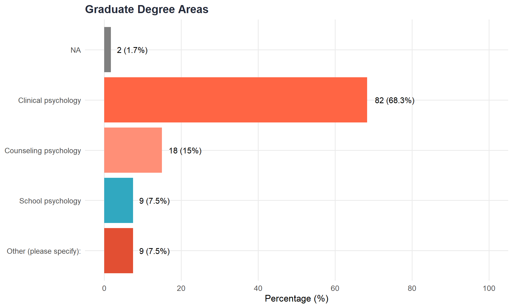
role_stats <- dat %>%
filter(!is.na(RoleDuration), RoleDuration >= 0) %>%
summarise(
N = n(),
Mean = mean(RoleDuration, na.rm = TRUE),
SD = sd(RoleDuration, na.rm = TRUE),
Median = median(RoleDuration, na.rm = TRUE),
Mode = as.numeric(names(sort(table(RoleDuration), decreasing = TRUE)[1])),
Min = min(RoleDuration, na.rm = TRUE),
Max = max(RoleDuration, na.rm = TRUE)
)
dat %>%
filter(!is.na(RoleDuration), RoleDuration >= 0) %>%
ggplot(aes(x = RoleDuration)) +
geom_histogram(binwidth = 2, fill = aptc_teal, color = "white", alpha = 0.9) +
geom_vline(aes(xintercept = median(RoleDuration)), color = aptc_coral, linetype = "dashed", size = 1) +
labs(
title = "How Long Have Directors Been in Their Role?",
subtitle = paste0("Mean = ", round(role_stats$Mean, 2), " years | Median = ", role_stats$Median, " years"),
x = "Years in Role", y = "Count"
) +
theme_minimal(base_size = 13) +
theme(
plot.title = element_text(face = "bold", color = aptc_navy)
)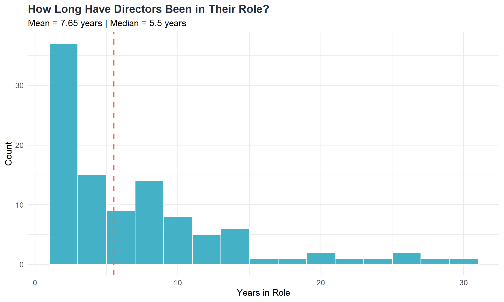
role_stats %>%
kable(digits = 2) %>%
kable_styling()| N | Mean | SD | Median | Mode | Min | Max |
|---|---|---|---|---|---|---|
| 104 | 7.65 | 6.56 | 5.5 | 3 | 1 | 31 |
role_time_stats <- dat_simple %>%
filter(!is.na(RoleDuration)) %>%
summarise(
N = n(),
Mean = mean(RoleDuration),
Median = median(RoleDuration),
Q1 = quantile(RoleDuration, 0.25),
Q3 = quantile(RoleDuration, 0.75),
Pct_5yrs_or_less = mean(RoleDuration <= 5) * 100
)
role_time_statsrank_tenure <- dat %>%
filter(!is.na(Rank), !is.na(PositionType)) %>%
mutate(
Rank_clean = case_when(
str_detect(Rank, regex("Assistant", ignore_case = TRUE)) ~ "Assistant Professor",
str_detect(Rank, regex("Associate", ignore_case = TRUE)) ~ "Associate Professor",
str_detect(Rank, regex("Full", ignore_case = TRUE)) ~ "Full Professor",
TRUE ~ "Other"
),
TenureStatus = case_when(
is_tt(PositionType) ~ "TT/Tenured",
is_ntt(PositionType) ~ "NTT",
TRUE ~ "Other"
)
) %>%
count(Rank_clean, TenureStatus) %>%
pivot_wider(names_from = TenureStatus, values_from = n, values_fill = 0)
rank_tenure %>%
kable(caption = "Academic Rank by Tenure Status") %>%
kable_styling(bootstrap_options = c("striped", "hover"))| Rank_clean | NTT | Other | TT/Tenured |
|---|---|---|---|
| Assistant Professor | 26 | 1 | 5 |
| Associate Professor | 34 | 0 | 6 |
| Full Professor | 10 | 1 | 3 |
| Other | 8 | 0 | 0 |
sup_summary <- dat %>%
count(Supervisor) %>%
mutate(Percentage = round(100 * n / sum(n), 1)) %>%
arrange(desc(n))
ggplot(sup_summary, aes(x = reorder(Supervisor, n), y = Percentage, fill = Supervisor)) +
geom_col(show.legend = FALSE) +
geom_text(aes(label = paste0(n, " (", Percentage, "%)")), hjust = -0.2, size = 3.5) +
coord_flip() +
scale_y_continuous(limits = c(0, 100), breaks = seq(0, 100, 20)) +
scale_fill_manual(values = aptc_palette) +
labs(title = "To Whom Do Clinic Directors Report?", x = NULL, y = "Percentage (%)") +
theme_minimal(base_size = 13) +
theme(
plot.title = element_text(face = "bold", color = aptc_navy),
panel.grid.minor = element_blank()
)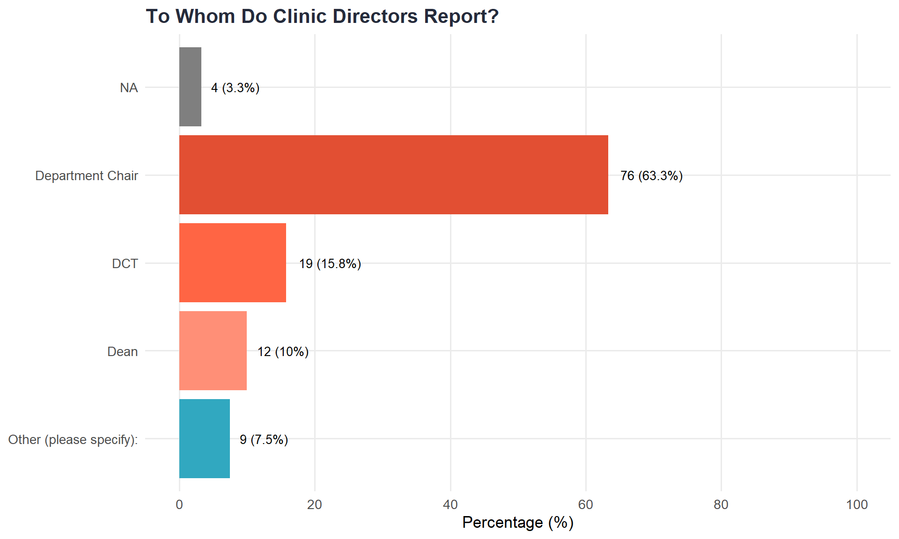
# Contract months
contract_months <- dat %>%
count(ContractMonths) %>%
mutate(Percentage = round(100 * n / sum(n), 1)) %>%
arrange(desc(n))
# Contract length
contract_length <- dat %>%
count(ContractLength) %>%
mutate(Percentage = round(100 * n / sum(n), 1)) %>%
arrange(desc(n))
p1 <- ggplot(contract_months, aes(x = reorder(ContractMonths, n), y = Percentage, fill = ContractMonths)) +
geom_col(show.legend = FALSE) +
geom_text(aes(label = paste0(n, " (", Percentage, "%)")), hjust = -0.2, size = 3) +
coord_flip() +
scale_y_continuous(limits = c(0, 100), breaks = seq(0, 100, 20)) +
scale_fill_manual(values = aptc_palette) +
labs(title = "Contract Type (Months)", x = NULL, y = "Percentage (%)") +
theme_minimal(base_size = 11) +
theme(plot.title = element_text(face = "bold", color = aptc_navy))
p2 <- ggplot(contract_length, aes(x = reorder(ContractLength, n), y = Percentage, fill = ContractLength)) +
geom_col(show.legend = FALSE) +
geom_text(aes(label = paste0(n, " (", Percentage, "%)")), hjust = -0.2, size = 3) +
coord_flip() +
scale_y_continuous(limits = c(0, 100), breaks = seq(0, 100, 20)) +
scale_fill_manual(values = aptc_palette) +
labs(title = "Contract Length", x = NULL, y = "Percentage (%)") +
theme_minimal(base_size = 11) +
theme(plot.title = element_text(face = "bold", color = aptc_navy))
p1 + p2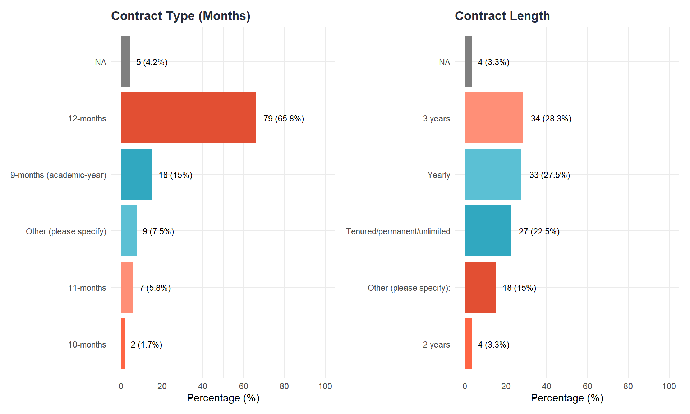
salary_stats <- dat_simple %>%
filter(!is.na(GrossSalary)) %>%
summarise(
N = n(),
Mean = mean(GrossSalary),
SD = sd(GrossSalary),
Median = median(GrossSalary),
Q1 = quantile(GrossSalary, 0.25),
Q3 = quantile(GrossSalary, 0.75),
Min = min(GrossSalary),
Max = max(GrossSalary)
)
dat_simple %>%
filter(!is.na(GrossSalary)) %>%
ggplot(aes(x = GrossSalary)) +
geom_histogram(binwidth = 10000, fill = aptc_teal, color = "white", alpha = 0.9) +
geom_vline(aes(xintercept = median(GrossSalary)), color = aptc_coral, linetype = "dashed", size = 1) +
scale_x_continuous(labels = dollar_format()) +
labs(
title = "Gross Salary Distribution",
subtitle = paste0("Median = ", dollar(salary_stats$Median), " | Mean = ", dollar(salary_stats$Mean)),
x = "Gross Salary", y = "Count"
) +
theme_minimal(base_size = 13) +
theme(
plot.title = element_text(face = "bold", color = aptc_navy)
)
salary_stats %>%
mutate(across(where(is.numeric), ~dollar(.))) %>%
kable() %>%
kable_styling()| N | Mean | SD | Median | Q1 | Q3 | Min | Max |
|---|---|---|---|---|---|---|---|
| $109 | $106,412 | $31,153.03 | $104,000 | $90,000 | $120,000 | $11,000 | $210,000 |
# Function to make salary table
make_salary_table <- function(df) {
df %>%
filter(!is.na(GrossSalary), FullPart %in% c("Full-time", "Part-time")) %>%
group_by(RankGrp, FullPart) %>%
summarise(n = n(), avg = mean(GrossSalary), .groups = "drop") %>%
mutate(val = ifelse(n >= 3, dollar(round(avg, 0)), "—")) %>%
select(RankGrp, FullPart, val) %>%
complete(RankGrp, FullPart = c("Full-time", "Part-time")) %>%
pivot_wider(
names_from = FullPart,
values_from = val,
names_glue = "Avg. {FullPart} Salary"
) %>%
group_by(RankGrp) %>%
summarise(
`Avg. Full-time Salary` = first(na.omit(`Avg. Full-time Salary`)),
`Avg. Part-time Salary` = first(na.omit(`Avg. Part-time Salary`)),
.groups = "drop"
) %>%
mutate(
`Avg. Full-Time Salary` = ifelse(is.na(`Avg. Full-time Salary`), "—", `Avg. Full-time Salary`),
`Avg. Part-Time Salary*` = ifelse(is.na(`Avg. Part-time Salary`), "—", `Avg. Part-time Salary`)
) %>%
select(`Rank / Role` = RankGrp, `Avg. Full-Time Salary`, `Avg. Part-Time Salary*`) %>%
arrange(`Rank / Role`)
}
# Overall table
overall_table <- make_salary_table(dat_simple)
overall_table %>%
gt() %>%
tab_header(
title = md("**Average Faculty Salaries – All Positions**"),
subtitle = "Full-time and Part-time Averages (suppressed if n < 3)"
) %>%
tab_style(
style = cell_text(weight = "bold"),
locations = cells_column_labels(everything())
) %>%
tab_source_note(
source_note = md("*Cells suppressed when based on fewer than 3 respondents*")
)| Average Faculty Salaries – All Positions | ||
|---|---|---|
| Full-time and Part-time Averages (suppressed if n < 3) | ||
| Rank / Role | Avg. Full-Time Salary | Avg. Part-Time Salary* |
| Assistant Professor | $89,113 | — |
| Associate Professor | $113,260 | — |
| Full Professor | $141,091 | — |
| Lecturer | — | — |
| Staff (N/A) | $130,712 | — |
| Other (specified) | $81,333 | — |
| Unspecified Rank | $97,300 | — |
| Cells suppressed when based on fewer than 3 respondents | ||
salary_gender_stats <- dat_simple %>%
filter(
!is.na(GrossSalary),
!is.na(Gender)
) %>%
group_by(Gender) %>%
summarise(
N = n(),
Mean = mean(GrossSalary),
SD = sd(GrossSalary),
Median = median(GrossSalary),
Q1 = quantile(GrossSalary, 0.25),
Q3 = quantile(GrossSalary, 0.75),
Min = min(GrossSalary),
Max = max(GrossSalary),
.groups = "drop"
)
salary_gender_stats %>%
mutate(across(where(is.numeric), ~ dollar(.))) %>%
kable() %>%
kable_styling()| Gender | N | Mean | SD | Median | Q1 | Q3 | Min | Max |
|---|---|---|---|---|---|---|---|---|
| Man | $17 | $119,448 | $32,504.46 | $114,000 | $105,000 | $140,000 | $50,584 | $172,000 |
| Non-Binary | $1 | $106,000 | NA | $106,000 | $106,000 | $106,000 | $106,000 | $106,000 |
| Prefer not to answer | $2 | $92,500 | $4,949.75 | $92,500 | $90,750 | $94,250 | $89,000 | $96,000 |
| Woman | $79 | $103,690 | $31,856.88 | $100,826 | $84,728 | $119,823 | $11,000 | $210,000 |
tt_table <- dat_simple %>%
filter(is_tt(PositionType)) %>%
make_salary_table()
tt_table %>%
gt() %>%
tab_header(
title = md("**Average Faculty Salaries – Tenure/Tenure-Track (TT)**"),
subtitle = "Full-time and Part-time Averages (suppressed if n < 3)"
) %>%
tab_style(
style = cell_text(weight = "bold"),
locations = cells_column_labels(everything())
) %>%
tab_source_note(
source_note = md("*Cells suppressed when based on fewer than 3 respondents*")
)| Average Faculty Salaries – Tenure/Tenure-Track (TT) | ||
|---|---|---|
| Full-time and Part-time Averages (suppressed if n < 3) | ||
| Rank / Role | Avg. Full-Time Salary | Avg. Part-Time Salary* |
| Assistant Professor | $91,204 | — |
| Associate Professor | $120,914 | — |
| Full Professor | — | — |
| Lecturer | — | — |
| Staff (N/A) | — | — |
| Other (specified) | — | — |
| Unspecified Rank | — | — |
| Cells suppressed when based on fewer than 3 respondents | ||
ntt_table <- dat_simple %>%
filter(is_ntt(PositionType)) %>%
make_salary_table()
ntt_table %>%
gt() %>%
tab_header(
title = md("**Average Faculty Salaries – Non-Tenure-Track (NTT)**"),
subtitle = "Full-time and Part-time Averages (suppressed if n < 3)"
) %>%
tab_style(
style = cell_text(weight = "bold"),
locations = cells_column_labels(everything())
) %>%
tab_source_note(
source_note = md("*Cells suppressed when based on fewer than 3 respondents*")
)| Average Faculty Salaries – Non-Tenure-Track (NTT) | ||
|---|---|---|
| Full-time and Part-time Averages (suppressed if n < 3) | ||
| Rank / Role | Avg. Full-Time Salary | Avg. Part-Time Salary* |
| Assistant Professor | $89,474 | — |
| Associate Professor | $111,729 | — |
| Full Professor | $143,444 | — |
| Lecturer | — | — |
| Staff (N/A) | — | — |
| Other (specified) | $81,333 | — |
| Unspecified Rank | — | — |
| Cells suppressed when based on fewer than 3 respondents | ||
dat_simple %>%
filter(!is.na(GrossSalary), !is.na(ContractLength)) %>%
ggplot(aes(x = reorder(ContractLength, GrossSalary, median), y = GrossSalary, fill = ContractLength)) +
geom_boxplot(alpha = 0.8, show.legend = FALSE) +
coord_flip() +
scale_y_continuous(labels = dollar_format()) +
scale_fill_manual(values = aptc_palette) +
labs(title = "Salary by Contract Length", x = "Contract Length", y = "Gross Salary") +
theme_minimal(base_size = 13) +
theme(
plot.title = element_text(face = "bold", color = aptc_navy)
)
Note on Salary Tables: The salary tables above show “—” (blank) cells when there are fewer than 3 respondents in that category. This is a privacy protection measure to prevent identification of individuals. For example, if only 1-2 part-time full professors responded, their average salary is suppressed.
salary_model_dat <- dat_simple %>%
filter(
!is.na(GrossSalary),
!is.na(Gender),
!is.na(RankGrp),
!is.na(PositionType),
!is.na(ContractLength)
) %>%
mutate(
Gender_model = case_when(
Gender %in% c("Man", "Woman") ~ Gender,
TRUE ~ NA_character_
),
Gender_model = factor(Gender_model),
RankGrp = factor(RankGrp),
PositionType = factor(PositionType),
ContractLength = factor(ContractLength)
) %>%
filter(!is.na(Gender_model))
salary_model <- lm(
GrossSalary ~ Gender_model + RankGrp + PositionType + ContractLength,
data = salary_model_dat
)
summary(salary_model)
Call:
lm(formula = GrossSalary ~ Gender_model + RankGrp + PositionType +
ContractLength, data = salary_model_dat)
Residuals:
Min 1Q Median 3Q Max
-70760 -14124 -2592 12948 91750
Coefficients:
Estimate
(Intercept) 81627
Gender_modelWoman -12376
RankGrpAssociate Professor 25249
RankGrpFull Professor 56234
RankGrpLecturer 7266
RankGrpStaff (N/A) 56339
RankGrpOther (specified) -16273
RankGrpUnspecified Rank 11409
PositionTypeNon-tenure-track faculty (incl. Adjunct and teaching faculty) 17437
PositionTypeOther (please specify): 1246
PositionTypeTenured or Tenure-track faculty 27704
ContractLength3 years 2095
ContractLengthOther (please specify): -4428
ContractLengthTenured/permanent/unlimited -3954
ContractLengthYearly -4662
Std. Error
(Intercept) 29301
Gender_modelWoman 7727
RankGrpAssociate Professor 7151
RankGrpFull Professor 11007
RankGrpLecturer 29140
RankGrpStaff (N/A) 24646
RankGrpOther (specified) 14086
RankGrpUnspecified Rank 22943
PositionTypeNon-tenure-track faculty (incl. Adjunct and teaching faculty) 24726
PositionTypeOther (please specify): 24200
PositionTypeTenured or Tenure-track faculty 25752
ContractLength3 years 14545
ContractLengthOther (please specify): 15660
ContractLengthTenured/permanent/unlimited 16992
ContractLengthYearly 15202
t value
(Intercept) 2.786
Gender_modelWoman -1.602
RankGrpAssociate Professor 3.531
RankGrpFull Professor 5.109
RankGrpLecturer 0.249
RankGrpStaff (N/A) 2.286
RankGrpOther (specified) -1.155
RankGrpUnspecified Rank 0.497
PositionTypeNon-tenure-track faculty (incl. Adjunct and teaching faculty) 0.705
PositionTypeOther (please specify): 0.051
PositionTypeTenured or Tenure-track faculty 1.076
ContractLength3 years 0.144
ContractLengthOther (please specify): -0.283
ContractLengthTenured/permanent/unlimited -0.233
ContractLengthYearly -0.307
Pr(>|t|)
(Intercept) 0.006646
Gender_modelWoman 0.113140
RankGrpAssociate Professor 0.000687
RankGrpFull Professor 2.11e-06
RankGrpLecturer 0.803707
RankGrpStaff (N/A) 0.024869
RankGrpOther (specified) 0.251370
RankGrpUnspecified Rank 0.620331
PositionTypeNon-tenure-track faculty (incl. Adjunct and teaching faculty) 0.482707
PositionTypeOther (please specify): 0.959060
PositionTypeTenured or Tenure-track faculty 0.285204
ContractLength3 years 0.885825
ContractLengthOther (please specify): 0.778085
ContractLengthTenured/permanent/unlimited 0.816565
ContractLengthYearly 0.759877
(Intercept) **
Gender_modelWoman
RankGrpAssociate Professor ***
RankGrpFull Professor ***
RankGrpLecturer
RankGrpStaff (N/A) *
RankGrpOther (specified)
RankGrpUnspecified Rank
PositionTypeNon-tenure-track faculty (incl. Adjunct and teaching faculty)
PositionTypeOther (please specify):
PositionTypeTenured or Tenure-track faculty
ContractLength3 years
ContractLengthOther (please specify):
ContractLengthTenured/permanent/unlimited
ContractLengthYearly
---
Signif. codes: 0 '***' 0.001 '**' 0.01 '*' 0.05 '.' 0.1 ' ' 1
Residual standard error: 26910 on 81 degrees of freedom
Multiple R-squared: 0.4107, Adjusted R-squared: 0.3088
F-statistic: 4.032 on 14 and 81 DF, p-value: 3e-05m_gender_only <- lm(
GrossSalary ~ Gender_model,
data = salary_model_dat
)
m_structural <- lm(
GrossSalary ~ RankGrp + PositionType + ContractLength,
data = salary_model_dat
)
m_full <- salary_model
anova(m_gender_only, m_structural, m_full)m_tt_ntt_rank <- lm(
GrossSalary ~ PositionType + RankGrp + FullPart,
data = dat_simple %>%
filter(
!is.na(GrossSalary),
PositionType %in% c(
"Tenured or Tenure-track faculty",
"Non-tenure-track faculty (incl. Adjunct and teaching faculty)"
),
RankGrp %in% c(
"Assistant Professor",
"Associate Professor",
"Full Professor"
),
FullPart %in% c("Full-time", "Part-time")
) %>%
mutate(
PositionType = relevel(
factor(PositionType),
ref = "Tenured or Tenure-track faculty"
),
RankGrp = factor(
RankGrp,
levels = c(
"Assistant Professor",
"Associate Professor",
"Full Professor"
)
),
FullPart = factor(FullPart)
)
)
summary(m_tt_ntt_rank)
Call:
lm(formula = GrossSalary ~ PositionType + RankGrp + FullPart,
data = dat_simple %>% filter(!is.na(GrossSalary), PositionType %in%
c("Tenured or Tenure-track faculty", "Non-tenure-track faculty (incl. Adjunct and teaching faculty)"),
RankGrp %in% c("Assistant Professor", "Associate Professor",
"Full Professor"), FullPart %in% c("Full-time", "Part-time")) %>%
mutate(PositionType = relevel(factor(PositionType), ref = "Tenured or Tenure-track faculty"),
RankGrp = factor(RankGrp, levels = c("Assistant Professor",
"Associate Professor", "Full Professor")), FullPart = factor(FullPart)))
Residuals:
Min 1Q Median 3Q Max
-78017 -13710 -3946 11268 94029
Coefficients:
Estimate
(Intercept) 91543
PositionTypeNon-tenure-track faculty (incl. Adjunct and teaching faculty) -2026
RankGrpAssociate Professor 24428
RankGrpFull Professor 46422
FullPartPart-time -24361
Std. Error
(Intercept) 8200
PositionTypeNon-tenure-track faculty (incl. Adjunct and teaching faculty) 8105
RankGrpAssociate Professor 6278
RankGrpFull Professor 9100
FullPartPart-time 13283
t value
(Intercept) 11.164
PositionTypeNon-tenure-track faculty (incl. Adjunct and teaching faculty) -0.250
RankGrpAssociate Professor 3.891
RankGrpFull Professor 5.101
FullPartPart-time -1.834
Pr(>|t|)
(Intercept) < 2e-16
PositionTypeNon-tenure-track faculty (incl. Adjunct and teaching faculty) 0.803346
RankGrpAssociate Professor 0.000216
RankGrpFull Professor 2.52e-06
FullPartPart-time 0.070682
(Intercept) ***
PositionTypeNon-tenure-track faculty (incl. Adjunct and teaching faculty)
RankGrpAssociate Professor ***
RankGrpFull Professor ***
FullPartPart-time .
---
Signif. codes: 0 '***' 0.001 '**' 0.01 '*' 0.05 '.' 0.1 ' ' 1
Residual standard error: 25680 on 74 degrees of freedom
Multiple R-squared: 0.3041, Adjusted R-squared: 0.2665
F-statistic: 8.086 on 4 and 74 DF, p-value: 1.827e-05m_no_position <- lm(
GrossSalary ~ RankGrp + FullPart,
data = model.frame(m_tt_ntt_rank)
)
anova(m_no_position, m_tt_ntt_rank)In an adjusted model accounting for rank, tenure status, and contract length, the estimated salary difference between men and women was $10,832 (SE = $9,000), which was not statistically significant (p = .23).
In a linear model restricted to faculty within the professorial rank structure and adjusting for full-time versus part-time status, tenure-track status was not independently associated with salary. Non-tenure-track faculty earned approximately $13,000 less than tenure-track faculty on average, but this difference was not statistically significant (p = .17). Academic rank was the dominant predictor of salary, with associate and full professors earning substantially more than assistant professors.
salary_fte_salary_dat <- dat_simple %>%
filter(!is.na(GrossSalary), !is.na(FTESalary))
cor.test(salary_fte_salary_dat$GrossSalary,
salary_fte_salary_dat$FTESalary,
method = "pearson")
Pearson's product-moment correlation
data: salary_fte_salary_dat$GrossSalary and salary_fte_salary_dat$FTESalary
t = 2.1338, df = 107, p-value = 0.03514
alternative hypothesis: true correlation is not equal to 0
95 percent confidence interval:
0.01447663 0.37584705
sample estimates:
cor
0.2020282 dat_simple <- dat_simple %>%
mutate(
# PD access (binary)
PD_access = case_when(
grepl("^Yes", PDFunds) ~ 1L,
PDFunds == "No" ~ 0L,
TRUE ~ NA_integer_
),
# PD amount (numeric, from text field)
PD_amount = suppressWarnings(as.numeric(PDFunds_2_TEXT)),
PD_amount = ifelse(PD_amount == -99, NA, PD_amount)
)
pd_summary <- dat %>%
count(PDFunds) %>%
mutate(Percentage = round(100 * n / sum(n), 1)) %>%
arrange(desc(n))
pd_summary %>%
kable(caption = "Professional Development Funding") %>%
kable_styling(bootstrap_options = c("striped", "hover"))| PDFunds | n | Percentage |
|---|---|---|
| Yes (if yes, please specify amount in U.S. dollars). (link to a conversion formula: https://fiscaldata.treasury.gov/currency-exchange-rates-converter/): | 90 | 75.0 |
| No | 18 | 15.0 |
| NA | 9 | 7.5 |
| I don't know | 3 | 2.5 |
dat_simple <- dat_simple %>%
mutate(
PDFunds_num = suppressWarnings(as.numeric(PDFunds)),
PDFunds_binary = ifelse(!is.na(PDFunds_num) & PDFunds_num > 0, 1L, 0L)
)
pd_amount_dat <- dat_simple %>%
filter(PD_access == 1, !is.na(PD_amount))
pd_amount_stats <- pd_amount_dat %>%
summarise(
N = n(),
Mean = mean(PD_amount),
SD = sd(PD_amount),
Median = median(PD_amount),
Q1 = quantile(PD_amount, 0.25),
Q3 = quantile(PD_amount, 0.75),
Min = min(PD_amount),
Max = max(PD_amount)
)
pd_amount_stats %>%
mutate(across(where(is.numeric), scales::dollar)) %>%
kable(caption = "Professional Development Funding Amounts (Among Recipients)") %>%
kable_styling(bootstrap_options = c("striped", "hover"))| N | Mean | SD | Median | Q1 | Q3 | Min | Max |
|---|---|---|---|---|---|---|---|
| $90 | $2,004.06 | $1,297.06 | $1,837.50 | $1,125 | $2,425 | $300 | $7,000 |
pd_amount_dat %>%
filter(
PositionType %in% c(
"Tenured or Tenure-track faculty",
"Non-tenure-track faculty (incl. Adjunct and teaching faculty)"
)
) %>%
ggplot(aes(x = PositionType, y = PD_amount, fill = PositionType)) +
geom_boxplot(alpha = 0.8, show.legend = FALSE) +
scale_y_continuous(labels = scales::dollar_format()) +
scale_fill_manual(values = aptc_binary) +
labs(
title = "Professional Development Funding Amounts by Appointment Type",
x = NULL,
y = "PD Funding Amount (USD)"
) +
theme_minimal(base_size = 13) +
theme(plot.title = element_text(face = "bold", color = aptc_navy))
m_pd_amount <- lm(
log(PD_amount) ~ PositionType + RankGrp + FullPart,
data = pd_amount_dat %>%
filter(
PositionType %in% c(
"Tenured or Tenure-track faculty",
"Non-tenure-track faculty (incl. Adjunct and teaching faculty)"
),
!is.na(RankGrp),
FullPart %in% c("Full-time", "Part-time")
) %>%
mutate(
PositionType = relevel(droplevels(factor(PositionType)),
ref = "Tenured or Tenure-track faculty"),
RankGrp = droplevels(factor(RankGrp)),
FullPart = droplevels(factor(FullPart))
)
)
summary(m_pd_amount)
Call:
lm(formula = log(PD_amount) ~ PositionType + RankGrp + FullPart,
data = pd_amount_dat %>% filter(PositionType %in% c("Tenured or Tenure-track faculty",
"Non-tenure-track faculty (incl. Adjunct and teaching faculty)"),
!is.na(RankGrp), FullPart %in% c("Full-time", "Part-time")) %>%
mutate(PositionType = relevel(droplevels(factor(PositionType)),
ref = "Tenured or Tenure-track faculty"), RankGrp = droplevels(factor(RankGrp)),
FullPart = droplevels(factor(FullPart))))
Residuals:
Min 1Q Median 3Q Max
-1.73479 -0.36594 0.03993 0.23658 1.37764
Coefficients:
Estimate
(Intercept) 7.30181
PositionTypeNon-tenure-track faculty (incl. Adjunct and teaching faculty) 0.13676
RankGrpAssociate Professor 0.03745
RankGrpFull Professor 0.14890
RankGrpLecturer 0.16233
RankGrpOther (specified) -0.77363
RankGrpUnspecified Rank 0.56779
FullPartPart-time 0.39590
Std. Error
(Intercept) 0.21411
PositionTypeNon-tenure-track faculty (incl. Adjunct and teaching faculty) 0.20840
RankGrpAssociate Professor 0.16575
RankGrpFull Professor 0.23288
RankGrpLecturer 0.63993
RankGrpOther (specified) 0.34437
RankGrpUnspecified Rank 0.63993
FullPartPart-time 0.33292
t value
(Intercept) 34.104
PositionTypeNon-tenure-track faculty (incl. Adjunct and teaching faculty) 0.656
RankGrpAssociate Professor 0.226
RankGrpFull Professor 0.639
RankGrpLecturer 0.254
RankGrpOther (specified) -2.247
RankGrpUnspecified Rank 0.887
FullPartPart-time 1.189
Pr(>|t|)
(Intercept) <2e-16
PositionTypeNon-tenure-track faculty (incl. Adjunct and teaching faculty) 0.514
RankGrpAssociate Professor 0.822
RankGrpFull Professor 0.525
RankGrpLecturer 0.801
RankGrpOther (specified) 0.028
RankGrpUnspecified Rank 0.378
FullPartPart-time 0.239
(Intercept) ***
PositionTypeNon-tenure-track faculty (incl. Adjunct and teaching faculty)
RankGrpAssociate Professor
RankGrpFull Professor
RankGrpLecturer
RankGrpOther (specified) *
RankGrpUnspecified Rank
FullPartPart-time
---
Signif. codes: 0 '***' 0.001 '**' 0.01 '*' 0.05 '.' 0.1 ' ' 1
Residual standard error: 0.6275 on 66 degrees of freedom
Multiple R-squared: 0.1091, Adjusted R-squared: 0.01464
F-statistic: 1.155 on 7 and 66 DF, p-value: 0.3406ggplot(pd_amount_dat, aes(x = PD_amount)) +
geom_histogram(
binwidth = 500,
fill = aptc_teal,
color = "white",
alpha = 0.9
) +
geom_vline(
xintercept = median(pd_amount_dat$PD_amount, na.rm = TRUE),
color = aptc_coral,
linetype = "dashed",
linewidth = 1
) +
scale_x_continuous(
labels = scales::dollar_format()
) +
labs(
title = "Distribution of Professional Development Funding Amounts",
x = "Professional Development Funding (USD)",
y = "Number of Respondents"
) +
theme_minimal(base_size = 13) +
theme(
plot.title = element_text(face = "bold", color = aptc_navy)
)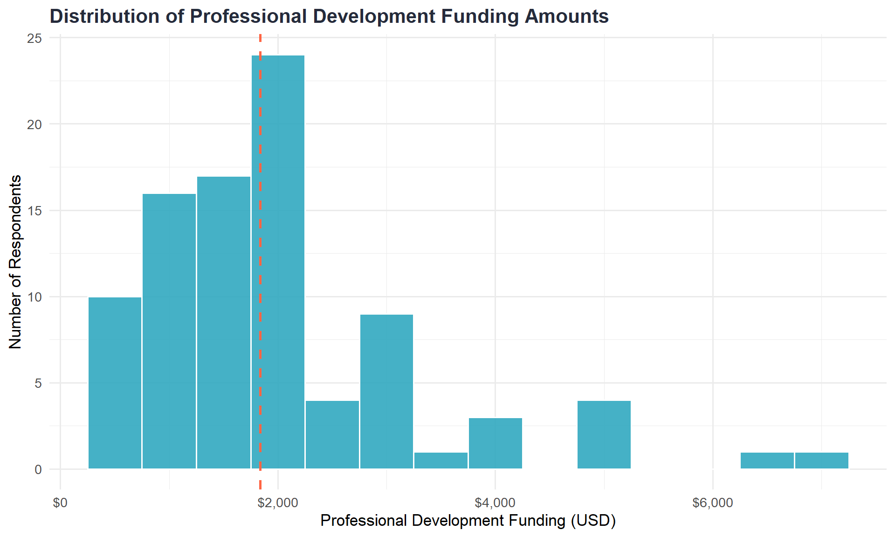
Among respondents who reported receiving professional development funds, dollar amounts did not differ significantly by tenure-track status, academic rank, or full-time appointment. PD funding amounts were relatively consistent across roles, with a typical allocation of approximately $1,500–$2,000 per year.
# Salary funding sources (select all that apply format)
# Variables: FundingSrc_1 through FundingSrc_7
funding_vars <- c(
"FundingSrc_1" = "Department/University",
"FundingSrc_2" = "College",
"FundingSrc_3" = "Clinic Fees",
"FundingSrc_4" = "Individual Client Fees",
"FundingSrc_5" = "Grants",
"FundingSrc_6" = "Community Contracts",
"FundingSrc_7" = "Other"
)
# Count endorsements for each funding source
funding_summary <- dat %>%
select(starts_with("FundingSrc_")) %>%
select(-contains("TEXT")) %>%
summarise(across(everything(), ~sum(!is.na(.) & . != "0" & . != "", na.rm = TRUE))) %>%
pivot_longer(everything(), names_to = "Variable", values_to = "Count") %>%
mutate(
Source = funding_vars[Variable],
Percentage = round(100 * Count / nrow(dat), 1)
) %>%
filter(!is.na(Source)) %>%
arrange(desc(Count))
ggplot(funding_summary, aes(x = reorder(Source, Count), y = Count, fill = Source)) +
geom_col(show.legend = FALSE) +
geom_text(aes(label = paste0(Count, " (", Percentage, "%)")), hjust = -0.1, size = 3.5) +
coord_flip() +
scale_fill_manual(values = aptc_palette) +
labs(
title = "Salary Funding Sources",
subtitle = "Respondents could select multiple sources",
x = NULL,
y = "Number Endorsing"
) +
theme_minimal(base_size = 13) +
theme(
plot.title = element_text(face = "bold", color = aptc_navy),
panel.grid.minor = element_blank()
)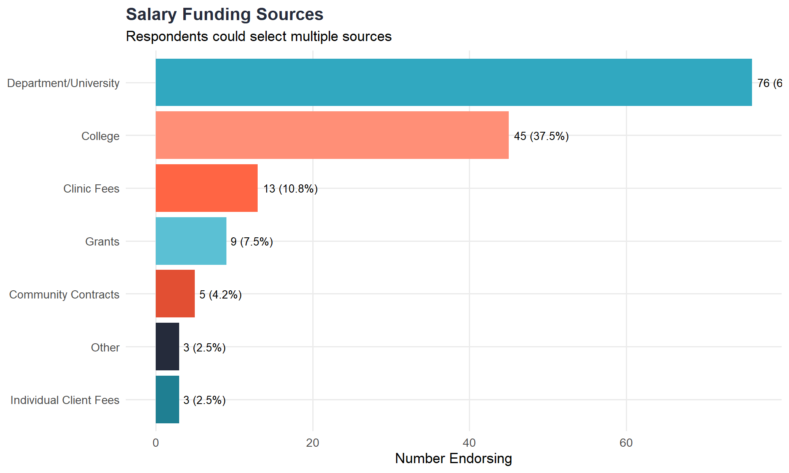
funding_summary %>%
select(Source, Count, Percentage) %>%
kable(caption = "Salary Funding Sources (Select All That Apply)") %>%
kable_styling(bootstrap_options = c("striped", "hover"))| Source | Count | Percentage |
|---|---|---|
| Department/University | 76 | 63.3 |
| College | 45 | 37.5 |
| Clinic Fees | 13 | 10.8 |
| Grants | 9 | 7.5 |
| Community Contracts | 5 | 4.2 |
| Individual Client Fees | 3 | 2.5 |
| Other | 3 | 2.5 |
hours_stats <- dat %>%
filter(!is.na(HoursWorkClinic)) %>%
summarise(
N = n(),
Mean = mean(HoursWorkClinic),
SD = sd(HoursWorkClinic),
Median = median(HoursWorkClinic),
Min = min(HoursWorkClinic),
Max = max(HoursWorkClinic)
)
dat %>%
filter(!is.na(HoursWorkClinic)) %>%
ggplot(aes(x = HoursWorkClinic)) +
geom_histogram(binwidth = 5, fill = aptc_teal, color = "white", alpha = 0.9) +
geom_vline(aes(xintercept = median(HoursWorkClinic)), color = aptc_coral, linetype = "dashed", size = 1) +
labs(
title = "Hours Per Week Spent on Clinic Activities",
subtitle = paste0("Median = ", hours_stats$Median, " hours | Mean = ", round(hours_stats$Mean, 1), " hours"),
x = "Hours per Week", y = "Count"
) +
theme_minimal(base_size = 13) +
theme(
plot.title = element_text(face = "bold", color = aptc_navy)
)
# Responsibilities (select all that apply format)
# Variables: Responsibilities_1 through Responsibilities_15
resp_vars <- c(
"Responsibilities_1" = "Administration",
"Responsibilities_2" = "Teaching",
"Responsibilities_3" = "Supervision",
"Responsibilities_4" = "Direct Patient Services",
"Responsibilities_5" = "Research",
"Responsibilities_6" = "University/Department Service",
"Responsibilities_7" = "Community/Professional Service",
"Responsibilities_8" = "External Practicum Placements",
"Responsibilities_10" = "Official Mentoring",
"Responsibilities_11" = "Unofficial Mentoring",
"Responsibilities_13" = "Crisis Response",
"Responsibilities_14" = "Consulting",
"Responsibilities_15" = "Outreach",
"Responsibilities_12" = "Other"
)
# Count endorsements for each responsibility
resp_summary <- dat %>%
select(starts_with("Responsibilities_")) %>%
select(-contains("TEXT")) %>%
summarise(across(everything(), ~sum(!is.na(.) & . != "0" & . != "", na.rm = TRUE))) %>%
pivot_longer(everything(), names_to = "Variable", values_to = "Count") %>%
mutate(
Responsibility = resp_vars[Variable],
Percentage = round(100 * Count / nrow(dat), 1)
) %>%
filter(!is.na(Responsibility)) %>%
arrange(desc(Count))
ggplot(resp_summary, aes(x = reorder(Responsibility, Count), y = Count, fill = Responsibility)) +
geom_col(show.legend = FALSE) +
geom_text(aes(label = paste0(Count, " (", Percentage, "%)")), hjust = -0.1, size = 3) +
coord_flip() +
scale_fill_manual(values = rep(aptc_palette, 2)) +
labs(
title = "Clinic Director Responsibilities",
subtitle = "Respondents could select multiple responsibilities",
x = NULL,
y = "Number Endorsing"
) +
theme_minimal(base_size = 12) +
theme(
plot.title = element_text(face = "bold", color = aptc_navy),
panel.grid.minor = element_blank()
)
resp_summary %>%
select(Responsibility, Count, Percentage) %>%
kable(caption = "Clinic Director Responsibilities (Select All That Apply)") %>%
kable_styling(bootstrap_options = c("striped", "hover"))| Responsibility | Count | Percentage |
|---|---|---|
| Administration | 110 | 91.7 |
| Supervision | 109 | 90.8 |
| Teaching | 99 | 82.5 |
| University/Department Service | 99 | 82.5 |
| Unofficial Mentoring | 98 | 81.7 |
| Outreach | 79 | 65.8 |
| Crisis Response | 67 | 55.8 |
| Consulting | 62 | 51.7 |
| Community/Professional Service | 60 | 50.0 |
| Research | 54 | 45.0 |
| Direct Patient Services | 43 | 35.8 |
| External Practicum Placements | 38 | 31.7 |
| Official Mentoring | 34 | 28.3 |
| Other | 16 | 13.3 |
# Hours breakdown by activity type
hours_vars <- tibble(
Variable = c("HoursSupTherapy", "HoursSupAssmnt", "HoursSupSup",
"HoursWatching", "HoursReviewingDoc"),
Activity = c("Supervising Therapy", "Supervising Assessment",
"Vertical Supervision", "Reviewing Sessions", "Reviewing Documentation")
)
hours_summary <- dat %>%
select(all_of(hours_vars$Variable)) %>%
pivot_longer(everything(), names_to = "Variable", values_to = "Hours") %>%
filter(!is.na(Hours), Hours >= 0) %>%
left_join(hours_vars, by = "Variable") %>%
group_by(Activity) %>%
summarise(
N = n(),
Mean = mean(Hours),
SD = sd(Hours),
Median = median(Hours),
Min = min(Hours),
Max = max(Hours),
.groups = "drop"
) %>%
arrange(desc(Mean))
hours_summary %>%
mutate(across(where(is.numeric) & !matches("N"), ~round(., 1))) %>%
kable(caption = "Hours Spent on Various Clinic Activities (per week)") %>%
kable_styling(bootstrap_options = c("striped", "hover"))| Activity | N | Mean | SD | Median | Min | Max |
|---|---|---|---|---|---|---|
| Supervising Therapy | 83 | 5.698795 | 3.8 | 5 | 1 | 20 |
| Reviewing Documentation | 90 | 4.133333 | 3.9 | 3 | 1 | 25 |
| Supervising Assessment | 54 | 3.703704 | 3.2 | 3 | 0 | 20 |
| Reviewing Sessions | 90 | 3.122222 | 3.0 | 2 | 0 | 20 |
| Vertical Supervision | 89 | 1.550562 | 2.1 | 1 | 0 | 15 |
# Visualization
hours_plot_data <- hours_summary %>%
mutate(Activity = factor(Activity, levels = Activity))
ggplot(hours_plot_data, aes(x = reorder(Activity, Mean), y = Mean, fill = Activity)) +
geom_col(show.legend = FALSE) +
geom_errorbar(aes(ymin = pmax(0, Mean - SD), ymax = Mean + SD), width = 0.2, color = aptc_navy) +
geom_text(aes(label = paste0(round(Mean, 1), " hrs")), hjust = -0.1, size = 3.5) +
coord_flip() +
scale_fill_manual(values = aptc_palette) +
labs(
title = "Hours Spent on Clinic Activities",
subtitle = "Mean hours per week (error bars = ±1 SD)",
x = NULL,
y = "Hours per Week"
) +
theme_minimal(base_size = 13) +
theme(
plot.title = element_text(face = "bold", color = aptc_navy),
panel.grid.minor = element_blank()
)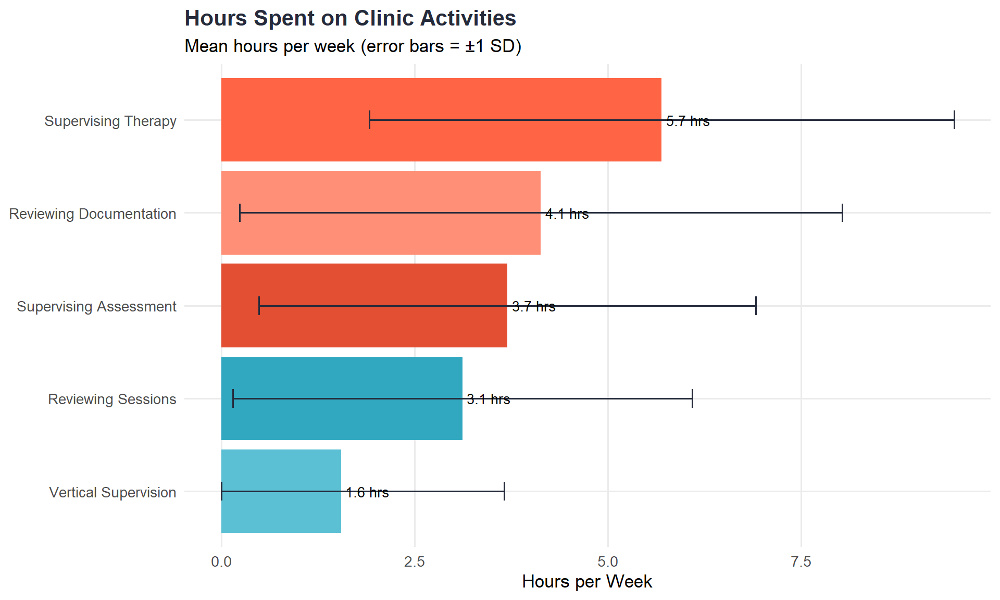
teaching_summary <- dat %>%
count(TeachingBinary) %>%
mutate(Percentage = round(100 * n / sum(n), 1))
courses_summary <- dat %>%
filter(TeachingBinary == "Yes", !is.na(CoursesTaught)) %>%
summarise(
N = n(),
Mean = mean(CoursesTaught),
Median = median(CoursesTaught),
Min = min(CoursesTaught),
Max = max(CoursesTaught)
)
p1 <- ggplot(teaching_summary, aes(x = TeachingBinary, y = Percentage, fill = TeachingBinary)) +
geom_col(show.legend = FALSE) +
geom_text(aes(label = paste0(n, "\n(", Percentage, "%)")), vjust = -0.5, size = 4) +
scale_y_continuous(limits = c(0, 100), breaks = seq(0, 100, 20)) +
scale_fill_manual(values = c("Yes" = aptc_teal, "No" = aptc_coral)) +
labs(title = "Do Directors Teach?", x = NULL, y = "Percentage (%)") +
theme_minimal(base_size = 12) +
theme(plot.title = element_text(face = "bold", color = aptc_navy))
p2 <- dat %>%
filter(TeachingBinary == "Yes", !is.na(CoursesTaught)) %>%
ggplot(aes(x = CoursesTaught)) +
geom_histogram(binwidth = 1, fill = aptc_teal, color = "white", alpha = 0.9) +
labs(
title = "Courses Taught per Year",
subtitle = paste0("Among those who teach (n=", courses_summary$N, ")"),
x = "Number of Courses", y = "Count"
) +
theme_minimal(base_size = 12) +
theme(plot.title = element_text(face = "bold", color = aptc_navy))
p1 + p2
model_summary <- dat %>%
count(ClinicTrainingModel) %>%
mutate(Percentage = round(100 * n / sum(n), 1)) %>%
arrange(desc(n))
age_stats <- dat %>%
filter(!is.na(ClinicAge), ClinicAge >= 0) %>%
summarise(
N = n(),
Mean = mean(ClinicAge),
SD = sd(ClinicAge),
Median = median(ClinicAge),
Min = min(ClinicAge),
Max = max(ClinicAge)
)
p1 <- ggplot(model_summary, aes(x = reorder(ClinicTrainingModel, n), y = Percentage, fill = ClinicTrainingModel)) +
geom_col(show.legend = FALSE) +
geom_text(aes(label = paste0(n, "\n(", Percentage, "%)")), hjust = -0.2, size = 3) +
coord_flip() +
scale_y_continuous(limits = c(0, 100), breaks = seq(0, 100, 20)) +
scale_fill_manual(values = aptc_palette) +
labs(title = "Training Model", x = NULL, y = "Percentage (%)") +
theme_minimal(base_size = 11) +
theme(plot.title = element_text(face = "bold", color = aptc_navy))
p2 <- dat %>%
filter(!is.na(ClinicAge), ClinicAge >= 0) %>%
ggplot(aes(x = ClinicAge)) +
geom_histogram(binwidth = 10, fill = aptc_coral, color = "white", alpha = 0.9) +
geom_vline(aes(xintercept = median(ClinicAge)), color = aptc_navy, linetype = "dashed", size = 1) +
labs(
title = "Clinic Age (Years)",
subtitle = paste0("Mean = ", round(age_stats$Mean, 1), " | Median = ", age_stats$Median),
x = "Years", y = "Count"
) +
theme_minimal(base_size = 11) +
theme(plot.title = element_text(face = "bold", color = aptc_navy))
p1 + p2
trainee_stats <- dat %>%
filter(!is.na(ClinicTotalTrainees), ClinicTotalTrainees > 0) %>%
summarise(
N = n(),
Mean = mean(ClinicTotalTrainees),
SD = sd(ClinicTotalTrainees),
Median = median(ClinicTotalTrainees),
Min = min(ClinicTotalTrainees),
Max = max(ClinicTotalTrainees)
)
client_stats <- dat %>%
filter(!is.na(ClinicClientsCount), ClinicClientsCount > 0) %>%
summarise(
N = n(),
Mean = mean(ClinicClientsCount),
SD = sd(ClinicClientsCount),
Median = median(ClinicClientsCount),
Min = min(ClinicClientsCount),
Max = max(ClinicClientsCount)
)
p1 <- dat %>%
filter(!is.na(ClinicTotalTrainees), ClinicTotalTrainees > 0) %>%
ggplot(aes(x = ClinicTotalTrainees)) +
geom_histogram(binwidth = 5, fill = aptc_teal, color = "white", alpha = 0.9) +
geom_vline(aes(xintercept = median(ClinicTotalTrainees)), color = aptc_coral, linetype = "dashed", size = 1) +
labs(
title = "Trainees per Year",
subtitle = paste0("Mean = ", round(trainee_stats$Mean, 1), " | Median = ", trainee_stats$Median),
x = "Number of Trainees", y = "Count"
) +
theme_minimal(base_size = 11) +
theme(plot.title = element_text(face = "bold", color = aptc_navy))
p2 <- dat %>%
filter(!is.na(ClinicClientsCount), ClinicClientsCount > 0) %>%
ggplot(aes(x = ClinicClientsCount)) +
geom_histogram(binwidth = 25, fill = aptc_coral, color = "white", alpha = 0.9) +
geom_vline(aes(xintercept = median(ClinicClientsCount)), color = aptc_navy, linetype = "dashed", size = 1) +
labs(
title = "Clients per Year",
subtitle = paste0("Mean = ", round(client_stats$Mean, 1), " | Median = ", client_stats$Median),
x = "Number of Clients", y = "Count"
) +
theme_minimal(base_size = 11) +
theme(plot.title = element_text(face = "bold", color = aptc_navy))
p1 + p2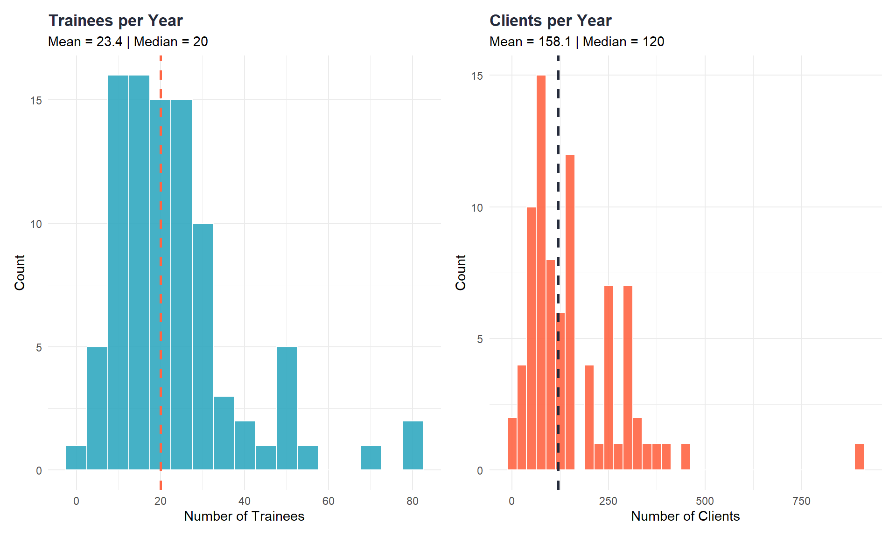
# Therapy services
therapy_binary <- dat %>%
count(ClinicTherapyBinary) %>%
mutate(Percentage = round(100 * n / sum(n), 1))
# Assessment services
assmnt_binary <- dat %>%
count(ClinicAssmntBinary) %>%
mutate(Percentage = round(100 * n / sum(n), 1))
therapy_binary %>%
kable(caption = "Clinics Offering Therapy Services") %>%
kable_styling()| ClinicTherapyBinary | n | Percentage |
|---|---|---|
| No | 3 | 2.5 |
| Yes | 93 | 77.5 |
| NA | 24 | 20.0 |
assmnt_binary %>%
kable(caption = "Clinics Offering Assessment Services") %>%
kable_styling()| ClinicAssmntBinary | n | Percentage |
|---|---|---|
| No | 8 | 6.7 |
| Yes | 88 | 73.3 |
| NA | 24 | 20.0 |
# Client populations (select all that apply)
pop_vars <- c(
"ClinicClientsPops_1" = "University Employees/Dependents",
"ClinicClientsPops_2" = "University Students",
"ClinicClientsPops_3" = "General Community",
"ClinicClientsPops_4" = "Veterans/Military-connected",
"ClinicClientsPops_6" = "Referred by Schools/Agencies",
"ClinicClientsPops_5" = "Other"
)
pop_summary <- dat %>%
select(starts_with("ClinicClientsPops_")) %>%
select(-contains("TEXT")) %>%
summarise(across(everything(), ~sum(!is.na(.) & . != "0" & . != "", na.rm = TRUE))) %>%
pivot_longer(everything(), names_to = "Variable", values_to = "Count") %>%
mutate(
Population = pop_vars[Variable],
Percentage = round(100 * Count / nrow(dat), 1)
) %>%
filter(!is.na(Population)) %>%
arrange(desc(Count))
ggplot(pop_summary, aes(x = reorder(Population, Count), y = Percentage, fill = Population)) +
geom_col(show.legend = FALSE) +
geom_text(aes(label = paste0(Count, " (", Percentage, "%)")), hjust = -0.1, size = 3.5) +
coord_flip() +
scale_y_continuous(limits = c(0, 110)) +
scale_fill_manual(values = aptc_palette) +
labs(
title = "Client Populations Served",
subtitle = "Respondents could select multiple populations",
x = NULL,
y = "Percentage (%)"
) +
theme_minimal(base_size = 13) +
theme(
plot.title = element_text(face = "bold", color = aptc_navy),
panel.grid.minor = element_blank()
)
pop_summary %>%
select(Population, Count, Percentage) %>%
kable(caption = "Client Populations Served (Select All That Apply)") %>%
kable_styling(bootstrap_options = c("striped", "hover"))| Population | Count | Percentage |
|---|---|---|
| General Community | 93 | 77.5 |
| University Students | 86 | 71.7 |
| Referred by Schools/Agencies | 73 | 60.8 |
| University Employees/Dependents | 72 | 60.0 |
| Veterans/Military-connected | 33 | 27.5 |
| Other | 8 | 6.7 |
# Therapy services (select all that apply)
therapy_vars <- c(
"ClinicTherapySvcs_1" = "Child Therapy",
"ClinicTherapySvcs_2" = "Adolescent Therapy",
"ClinicTherapySvcs_3" = "Adult Therapy",
"ClinicTherapySvcs_4" = "Older Adult Therapy",
"ClinicTherapySvcs_5" = "Couples Therapy",
"ClinicTherapySvcs_6" = "Parent Training",
"ClinicTherapySvcs_7" = "Conjoint Family Therapy",
"ClinicTherapySvcs_8" = "Group Therapy",
"ClinicTherapySvcs_9" = "Other"
)
therapy_summary <- dat %>%
filter(ClinicTherapyBinary == "Yes") %>%
select(starts_with("ClinicTherapySvcs_")) %>%
select(-contains("TEXT")) %>%
summarise(across(everything(), ~sum(!is.na(.) & . != "0" & . != "", na.rm = TRUE))) %>%
pivot_longer(everything(), names_to = "Variable", values_to = "Count") %>%
mutate(
Service = therapy_vars[Variable],
Percentage = round(100 * Count / sum(dat$ClinicTherapyBinary == "Yes", na.rm = TRUE), 1)
) %>%
filter(!is.na(Service)) %>%
arrange(desc(Count))
ggplot(therapy_summary, aes(x = reorder(Service, Count), y = Percentage, fill = Service)) +
geom_col(show.legend = FALSE) +
geom_text(aes(label = paste0(Percentage, "%")), hjust = -0.1, size = 3.5) +
coord_flip() +
scale_y_continuous(limits = c(0, 110)) +
scale_fill_manual(values = aptc_palette) +
labs(
title = "Therapy Services Offered",
subtitle = "Among clinics providing therapy",
x = NULL,
y = "Percentage (%)"
) +
theme_minimal(base_size = 13) +
theme(
plot.title = element_text(face = "bold", color = aptc_navy),
panel.grid.minor = element_blank()
)
therapy_summary %>%
select(Service, Count, Percentage) %>%
kable(caption = "Therapy Services Offered (Among Clinics Providing Therapy)") %>%
kable_styling(bootstrap_options = c("striped", "hover"))| Service | Count | Percentage |
|---|---|---|
| Adult Therapy | 90 | 96.8 |
| Adolescent Therapy | 82 | 88.2 |
| Child Therapy | 75 | 80.6 |
| Older Adult Therapy | 70 | 75.3 |
| Parent Training | 62 | 66.7 |
| Group Therapy | 54 | 58.1 |
| Couples Therapy | 44 | 47.3 |
| Conjoint Family Therapy | 24 | 25.8 |
| Other | 7 | 7.5 |
# Assessment services (select all that apply)
assmnt_vars <- c(
"ClinicAssmntSvcs_1" = "Early Childhood (0-5)",
"ClinicAssmntSvcs_2" = "Child/Adolescent Psychoeducational",
"ClinicAssmntSvcs_3" = "Child/Adolescent Neuropsychological",
"ClinicAssmntSvcs_4" = "Adult Psychoeducational",
"ClinicAssmntSvcs_5" = "Adult Neuropsychological",
"ClinicAssmntSvcs_6" = "Older Adult Neuropsychological",
"ClinicAssmntSvcs_7" = "Personality Testing",
"ClinicAssmntSvcs_8" = "Projective Testing",
"ClinicAssmntSvcs_9" = "Forensic",
"ClinicAssmntSvcs_10" = "Functional Behavioral Assessment",
"ClinicAssmntSvcs_11" = "School District Assessment",
"ClinicAssmntSvcs_12" = "ADHD Testing",
"ClinicAssmntSvcs_13" = "Specific Learning Disorder",
"ClinicAssmntSvcs_14" = "Autism Spectrum",
"ClinicAssmntSvcs_15" = "Memory Evaluations",
"ClinicAssmntSvcs_16" = "Psychosocial Evaluations"
)
assmnt_summary <- dat %>%
filter(ClinicAssmntBinary == "Yes") %>%
select(starts_with("ClinicAssmntSvcs_")) %>%
select(-contains("TEXT")) %>%
summarise(across(everything(), ~sum(!is.na(.) & . != "0" & . != "", na.rm = TRUE))) %>%
pivot_longer(everything(), names_to = "Variable", values_to = "Count") %>%
mutate(
Service = assmnt_vars[Variable],
Percentage = round(100 * Count / sum(dat$ClinicAssmntBinary == "Yes", na.rm = TRUE), 1)
) %>%
filter(!is.na(Service)) %>%
arrange(desc(Count))
ggplot(assmnt_summary, aes(x = reorder(Service, Count), y = Percentage, fill = Service)) +
geom_col(show.legend = FALSE) +
geom_text(aes(label = paste0(Percentage, "%")), hjust = -0.1, size = 2.5) +
coord_flip() +
scale_y_continuous(limits = c(0, 110)) +
scale_fill_manual(values = rep(aptc_palette, 2)) +
labs(
title = "Assessment Services Offered",
subtitle = "Among clinics providing assessment",
x = NULL,
y = "Percentage (%)"
) +
theme_minimal(base_size = 11) +
theme(
plot.title = element_text(face = "bold", color = aptc_navy),
panel.grid.minor = element_blank()
)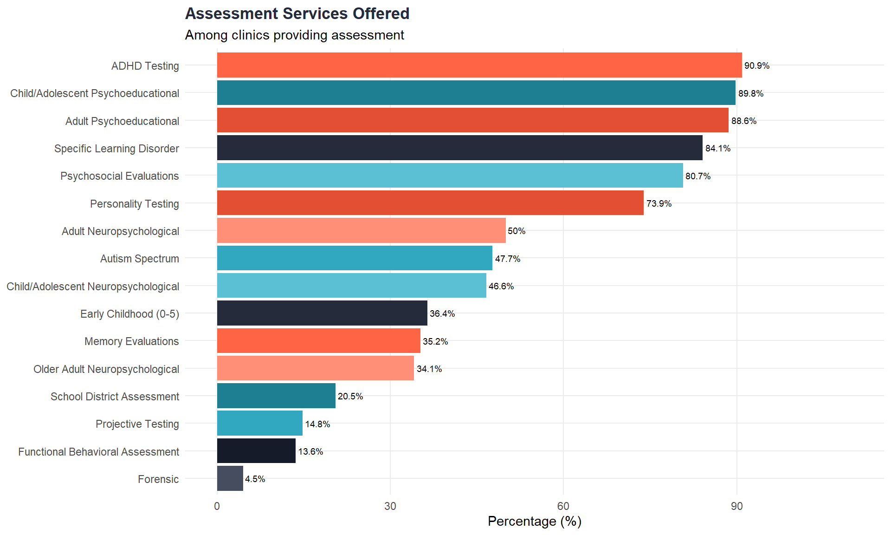
assmnt_summary %>%
select(Service, Count, Percentage) %>%
kable(caption = "Assessment Services Offered (Among Clinics Providing Assessment)") %>%
kable_styling(bootstrap_options = c("striped", "hover"))| Service | Count | Percentage |
|---|---|---|
| ADHD Testing | 80 | 90.9 |
| Child/Adolescent Psychoeducational | 79 | 89.8 |
| Adult Psychoeducational | 78 | 88.6 |
| Specific Learning Disorder | 74 | 84.1 |
| Psychosocial Evaluations | 71 | 80.7 |
| Personality Testing | 65 | 73.9 |
| Adult Neuropsychological | 44 | 50.0 |
| Autism Spectrum | 42 | 47.7 |
| Child/Adolescent Neuropsychological | 41 | 46.6 |
| Early Childhood (0-5) | 32 | 36.4 |
| Memory Evaluations | 31 | 35.2 |
| Older Adult Neuropsychological | 30 | 34.1 |
| School District Assessment | 18 | 20.5 |
| Projective Testing | 13 | 14.8 |
| Functional Behavioral Assessment | 12 | 13.6 |
| Forensic | 4 | 4.5 |
sliding_scale <- dat %>%
count(ClinicSlidingScale) %>%
mutate(Percentage = round(100 * n / sum(n), 1))
ggplot(sliding_scale, aes(x = ClinicSlidingScale, y = Percentage, fill = ClinicSlidingScale)) +
geom_col(show.legend = FALSE) +
geom_text(aes(label = paste0(n, " (", Percentage, "%)")), vjust = -0.5, size = 5) +
scale_y_continuous(limits = c(0, 100), breaks = seq(0, 100, 20)) +
scale_fill_manual(values = c("Yes" = aptc_teal, "No" = aptc_coral)) +
labs(title = "Do Clinics Offer a Sliding Scale?", x = NULL, y = "Percentage (%)") +
theme_minimal(base_size = 13) +
theme(plot.title = element_text(face = "bold", color = aptc_navy))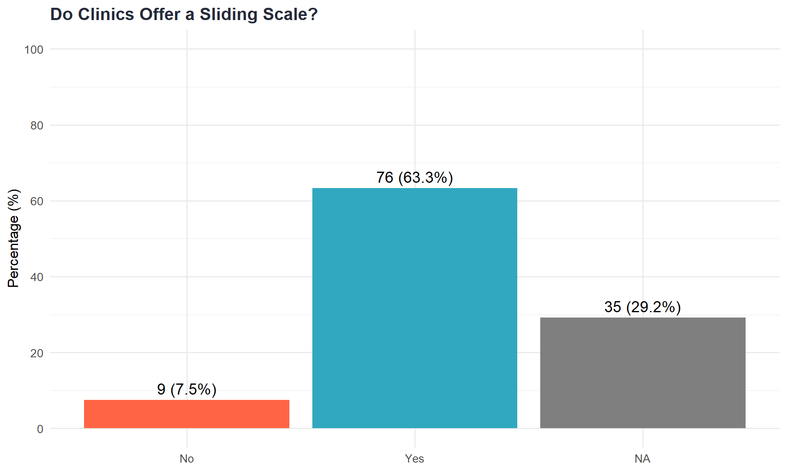
revenue_stats <- dat %>%
filter(!is.na(ClinicRevenue), ClinicRevenue > 0) %>%
summarise(
N = n(),
Mean = mean(ClinicRevenue),
SD = sd(ClinicRevenue),
Median = median(ClinicRevenue),
Q1 = quantile(ClinicRevenue, 0.25),
Q3 = quantile(ClinicRevenue, 0.75),
Min = min(ClinicRevenue),
Max = max(ClinicRevenue)
)
dat %>%
filter(!is.na(ClinicRevenue), ClinicRevenue > 0, ClinicRevenue < 500000) %>%
ggplot(aes(x = ClinicRevenue)) +
geom_histogram(binwidth = 25000, fill = aptc_teal, color = "white", alpha = 0.9) +
geom_vline(aes(xintercept = median(ClinicRevenue, na.rm = TRUE)), color = aptc_coral, linetype = "dashed", size = 1) +
scale_x_continuous(labels = dollar_format()) +
labs(
title = "Annual Clinic Revenue Distribution",
subtitle = paste0("Median = ", dollar(revenue_stats$Median), " | Mean = ", dollar(revenue_stats$Mean)),
x = "Annual Revenue", y = "Count"
) +
theme_minimal(base_size = 13) +
theme(
plot.title = element_text(face = "bold", color = aptc_navy)
)
# Therapy fees
therapy_fee_vars <- c("ClinicTherapyFees_1", "ClinicTherapyFees_2", "ClinicTherapyFees_3")
therapy_fee_names <- c("Minimum", "Maximum", "Typical")
therapy_fees <- dat %>%
select(all_of(therapy_fee_vars)) %>%
mutate(across(everything(), as.numeric)) %>%
pivot_longer(everything(), names_to = "Variable", values_to = "Fee") %>%
filter(!is.na(Fee), Fee >= 0) %>%
mutate(
Type = case_when(
Variable == "ClinicTherapyFees_1" ~ "Minimum",
Variable == "ClinicTherapyFees_2" ~ "Maximum",
Variable == "ClinicTherapyFees_3" ~ "Typical"
)
) %>%
group_by(Type) %>%
summarise(
N = n(),
Mean = mean(Fee),
Median = median(Fee),
Min = min(Fee),
Max = max(Fee),
.groups = "drop"
)
# Assessment fees
assmnt_fee_vars <- c("ClinicAssmntFees_1", "ClinicAssmntFees_2", "ClinicAssmntFees_3")
assmnt_fees <- dat %>%
select(all_of(assmnt_fee_vars)) %>%
mutate(across(everything(), as.numeric)) %>%
pivot_longer(everything(), names_to = "Variable", values_to = "Fee") %>%
filter(!is.na(Fee), Fee >= 0) %>%
mutate(
Type = case_when(
Variable == "ClinicAssmntFees_1" ~ "Minimum",
Variable == "ClinicAssmntFees_2" ~ "Maximum",
Variable == "ClinicAssmntFees_3" ~ "Typical"
)
) %>%
group_by(Type) %>%
summarise(
N = n(),
Mean = mean(Fee),
Median = median(Fee),
Min = min(Fee),
Max = max(Fee),
.groups = "drop"
)
# Combined fee table
fee_summary <- bind_rows(
therapy_fees %>% mutate(Service = "Therapy"),
assmnt_fees %>% mutate(Service = "Assessment")
) %>%
select(Service, Type, N, Mean, Median, Min, Max) %>%
arrange(Service, factor(Type, levels = c("Minimum", "Typical", "Maximum")))
fee_summary %>%
mutate(across(c(Mean, Median, Min, Max), ~dollar(round(.)))) %>%
kable(caption = "Standard Fee Structures") %>%
kable_styling(bootstrap_options = c("striped", "hover"))| Service | Type | N | Mean | Median | Min | Max |
|---|---|---|---|---|---|---|
| Assessment | Minimum | 77 | $328 | $225 | $0 | $3,000 |
| Assessment | Typical | 76 | $597 | $500 | $6 | $3,000 |
| Assessment | Maximum | 77 | $1,004 | $800 | $20 | $3,500 |
| Therapy | Minimum | 81 | $12 | $5 | $0 | $154 |
| Therapy | Typical | 79 | $25 | $15 | $0 | $154 |
| Therapy | Maximum | 81 | $66 | $50 | $10 | $260 |
billing_summary <- dat %>%
count(ClinicBillBinary) %>%
mutate(Percentage = round(100 * n / sum(n), 1))
billing_summary %>%
kable(caption = "Does Your Clinic Bill Insurance?") %>%
kable_styling(bootstrap_options = c("striped", "hover"))| ClinicBillBinary | n | Percentage |
|---|---|---|
| No | 6 | 5 |
| Yes | 90 | 75 |
| NA | 24 | 20 |
dat_revenue <- dat %>%
filter(!is.na(ClinicRevenue), !is.na(ClinicClientsCount),
ClinicRevenue > 0, ClinicClientsCount > 0,
ClinicRevenue < 1000000) %>%
mutate(
ClinicSize = case_when(
ClinicClientsCount < 93 ~ "Small (<93)",
ClinicClientsCount >= 93 & ClinicClientsCount <= 130 ~ "Medium (93-130)",
ClinicClientsCount > 130 ~ "Large (>130)"
),
ClinicSize = factor(ClinicSize, levels = c("Small (<93)", "Medium (93-130)", "Large (>130)"))
)
# Correlation
cor_result <- cor.test(dat_revenue$ClinicClientsCount, dat_revenue$ClinicRevenue)
ggplot(dat_revenue, aes(x = ClinicClientsCount, y = ClinicRevenue, color = ClinicSize)) +
geom_point(size = 3, alpha = 0.7) +
geom_smooth(method = "lm", se = TRUE, color = aptc_navy, linetype = "dashed") +
scale_y_continuous(labels = dollar_format()) +
scale_color_manual(values = c("Small (<93)" = aptc_coral,
"Medium (93-130)" = aptc_teal,
"Large (>130)" = aptc_navy)) +
labs(
title = "Clinic Revenue by Client Number",
subtitle = paste0("Correlation: r = ", round(cor_result$estimate, 2)),
x = "Number of Clients per Year",
y = "Annual Clinic Revenue",
color = "Clinic Size"
) +
theme_minimal(base_size = 13) +
theme(
plot.title = element_text(face = "bold", color = aptc_navy),
legend.position = "top"
)
# Square footage
sqft_stats <- dat %>%
filter(!is.na(ClinSqFt), ClinSqFt > 0) %>%
summarise(
N = n(),
Mean = mean(ClinSqFt),
SD = sd(ClinSqFt),
Median = median(ClinSqFt),
Min = min(ClinSqFt),
Max = max(ClinSqFt)
)
sqft_stats %>%
mutate(across(where(is.numeric) & !matches("N"), ~format(round(.), big.mark = ","))) %>%
kable(caption = "Clinic Square Footage") %>%
kable_styling(bootstrap_options = c("striped", "hover"))| N | Mean | SD | Median | Min | Max |
|---|---|---|---|---|---|
| 0 | NaN | NA | NA | Inf | -Inf |
# Plot square footage distribution
dat %>%
filter(!is.na(ClinSqFt), ClinSqFt > 0, ClinSqFt < 20000) %>%
ggplot(aes(x = ClinSqFt)) +
geom_histogram(binwidth = 500, fill = aptc_teal, color = "white", alpha = 0.9) +
geom_vline(aes(xintercept = median(ClinSqFt)), color = aptc_coral, linetype = "dashed", size = 1) +
scale_x_continuous(labels = comma_format()) +
labs(
title = "Clinic Space Distribution",
subtitle = paste0("Median = ", format(round(sqft_stats$Median), big.mark = ","), " sq ft"),
x = "Square Feet", y = "Count"
) +
theme_minimal(base_size = 13) +
theme(
plot.title = element_text(face = "bold", color = aptc_navy)
)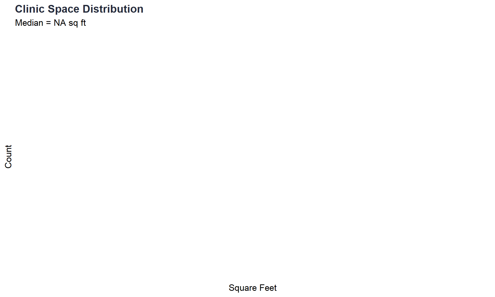
room_stats <- dat %>%
filter(!is.na(NumRooms), NumRooms > 0) %>%
summarise(
N = n(),
Mean = mean(NumRooms),
SD = sd(NumRooms),
Median = median(NumRooms),
Min = min(NumRooms),
Max = max(NumRooms)
)
dat %>%
filter(!is.na(NumRooms), NumRooms > 0) %>%
ggplot(aes(x = NumRooms)) +
geom_histogram(binwidth = 2, fill = aptc_teal, color = "white", alpha = 0.9) +
geom_vline(aes(xintercept = median(NumRooms)), color = aptc_coral, linetype = "dashed", size = 1) +
labs(
title = "Number of Clinic Rooms",
subtitle = paste0("Mean = ", round(room_stats$Mean, 1), " | Median = ", room_stats$Median),
x = "Number of Rooms", y = "Count"
) +
theme_minimal(base_size = 13) +
theme(
plot.title = element_text(face = "bold", color = aptc_navy)
)
max_trainee_summary <- dat %>%
filter(!is.na(MaxTraineeCount), MaxTraineeCount > 0) %>%
summarise(
N = n(),
Mean = mean(MaxTraineeCount),
SD = sd(MaxTraineeCount),
Median = median(MaxTraineeCount),
Min = min(MaxTraineeCount),
Max = max(MaxTraineeCount)
)
dat %>%
filter(!is.na(MaxTraineeCount), MaxTraineeCount > 0) %>%
ggplot(aes(x = MaxTraineeCount)) +
geom_histogram(binwidth = 2, fill = aptc_coral, color = "white", alpha = 0.9) +
geom_vline(aes(xintercept = median(MaxTraineeCount)), color = aptc_navy, linetype = "dashed", size = 1) +
labs(
title = "Maximum Trainees per Supervisor",
subtitle = paste0("Mean = ", round(max_trainee_summary$Mean, 1), " | Median = ", max_trainee_summary$Median),
x = "Max Trainees", y = "Count"
) +
theme_minimal(base_size = 13) +
theme(
plot.title = element_text(face = "bold", color = aptc_navy)
)
# Detailed caseload information
caseload_vars <- tibble(
Variable = c("MaxTraineesTherapy", "MaxTraineesAssmnt", "MaxTxCasesAllow", "MaxAxCasesAllow"),
Metric = c("Max Therapy Trainees", "Max Assessment Trainees",
"Max Therapy Cases Allowed", "Max Assessment Cases Allowed")
)
caseload_summary <- dat %>%
select(all_of(caseload_vars$Variable)) %>%
pivot_longer(everything(), names_to = "Variable", values_to = "Value") %>%
filter(!is.na(Value), Value > 0) %>%
left_join(caseload_vars, by = "Variable") %>%
group_by(Metric) %>%
summarise(
N = n(),
Mean = mean(Value),
SD = sd(Value),
Median = median(Value),
Min = min(Value),
Max = max(Value),
.groups = "drop"
)
caseload_summary %>%
mutate(across(where(is.numeric) & !matches("N"), ~round(., 1))) %>%
kable(caption = "Student Caseload & Supervisor Team Size") %>%
kable_styling(bootstrap_options = c("striped", "hover"))| Metric | N | Mean | SD | Median | Min | Max |
|---|---|---|---|---|---|---|
| Max Assessment Cases Allowed | 79 | 2.443038 | 1.2 | 2 | 1 | 8 |
| Max Assessment Trainees | 77 | 6.259740 | 3.9 | 5 | 1 | 25 |
| Max Therapy Cases Allowed | 77 | 5.636364 | 2.1 | 5 | 2 | 10 |
| Max Therapy Trainees | 83 | 7.433735 | 4.0 | 6 | 1 | 30 |
# Support staff, grad staff, undergrad staff
staff_vars <- tibble(
Variable = c("FTESupportStaff", "ClinicSupportStaff", "FTEGradStaff",
"GradStaff", "UgradStaff", "PostdocCount"),
Staff_Type = c("Support Staff (FTE)", "Support Staff (Count)",
"Graduate Staff (FTE)", "Graduate Staff (Count)",
"Undergraduate Staff", "Postdocs")
)
staff_summary <- dat %>%
select(any_of(staff_vars$Variable)) %>%
mutate(across(everything(), as.numeric)) %>%
pivot_longer(everything(), names_to = "Variable", values_to = "Value") %>%
filter(!is.na(Value), Value >= 0) %>%
left_join(staff_vars, by = "Variable") %>%
group_by(Staff_Type) %>%
summarise(
N = n(),
Mean = mean(Value),
SD = sd(Value),
Median = median(Value),
Min = min(Value),
Max = max(Value),
.groups = "drop"
) %>%
filter(!is.na(Staff_Type))
staff_summary %>%
mutate(across(where(is.numeric) & !matches("N"), ~round(., 1))) %>%
kable(caption = "Clinic Staff Summary") %>%
kable_styling(bootstrap_options = c("striped", "hover"))| Staff_Type | N | Mean | SD | Median | Min | Max |
|---|---|---|---|---|---|---|
| Graduate Staff (FTE) | 61 | 0.9651639 | 1.0 | 0.75 | 0.00 | 7 |
| Postdocs | 8 | 2.5000000 | 1.4 | 2.50 | 1.00 | 4 |
| Support Staff (FTE) | 68 | 1.5893382 | 2.6 | 1.00 | 0.05 | 20 |
# Percentage with various staff types
staff_presence <- dat %>%
summarise(
`Has Support Staff` = mean(as.numeric(ClinicSupportStaff) > 0, na.rm = TRUE) * 100,
`Has Grad Staff` = mean(as.numeric(GradStaff) > 0, na.rm = TRUE) * 100,
`Has Undergrad Staff` = mean(as.numeric(UgradStaff) > 0, na.rm = TRUE) * 100,
`Has Postdocs` = mean(as.numeric(PostdocCount) > 0, na.rm = TRUE) * 100
) %>%
pivot_longer(everything(), names_to = "Staff Type", values_to = "Percentage")
ggplot(staff_presence, aes(x = reorder(`Staff Type`, Percentage), y = Percentage, fill = `Staff Type`)) +
geom_col(show.legend = FALSE) +
geom_text(aes(label = paste0(round(Percentage, 0), "%")), hjust = -0.1, size = 4) +
coord_flip() +
scale_y_continuous(limits = c(0, 100)) +
scale_fill_manual(values = aptc_palette) +
labs(
title = "Percentage of Clinics with Various Staff Types",
x = NULL,
y = "Percentage (%)"
) +
theme_minimal(base_size = 13) +
theme(
plot.title = element_text(face = "bold", color = aptc_navy)
)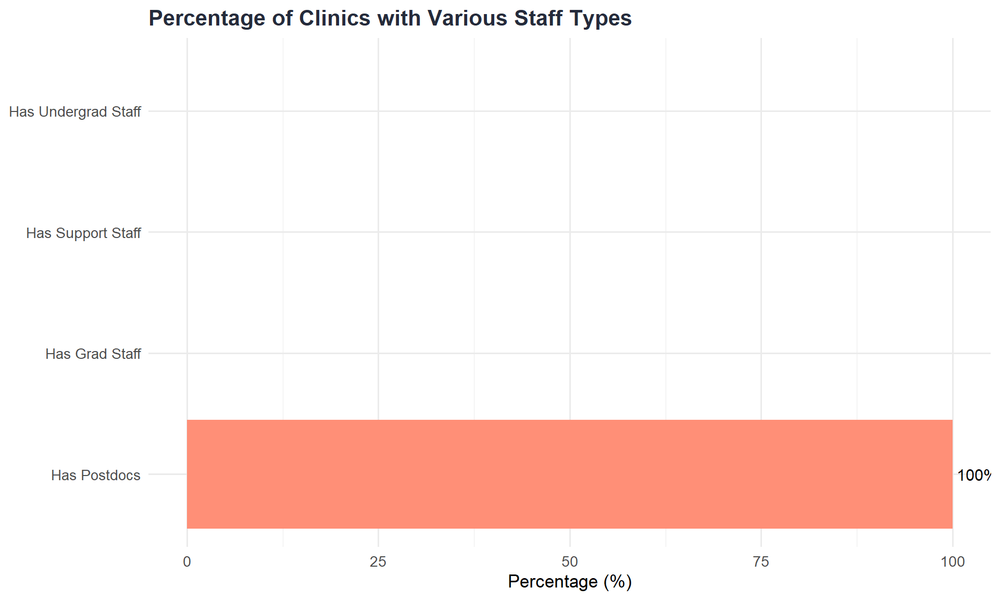
# Clinic operating hours
clinic_hours_stats <- dat %>%
mutate(ClinicHours = as.numeric(ClinicHours)) %>%
filter(!is.na(ClinicHours), ClinicHours > 0) %>%
summarise(
N = n(),
Mean = mean(ClinicHours),
SD = sd(ClinicHours),
Median = median(ClinicHours),
Min = min(ClinicHours),
Max = max(ClinicHours)
)
clinic_hours_stats %>%
mutate(across(where(is.numeric) & !matches("N"), ~round(., 1))) %>%
kable(caption = "Clinic Operating Hours per Week") %>%
kable_styling(bootstrap_options = c("striped", "hover"))| N | Mean | SD | Median | Min | Max |
|---|---|---|---|---|---|
| 87 | 42.98851 | 11.9 | 42 | 12 | 70 |
dat %>%
mutate(ClinicHours = as.numeric(ClinicHours)) %>%
filter(!is.na(ClinicHours), ClinicHours > 0) %>%
ggplot(aes(x = ClinicHours)) +
geom_histogram(binwidth = 5, fill = aptc_teal, color = "white", alpha = 0.9) +
geom_vline(aes(xintercept = median(ClinicHours)), color = aptc_coral, linetype = "dashed", size = 1) +
labs(
title = "Clinic Operating Hours per Week",
subtitle = paste0("Median = ", clinic_hours_stats$Median, " hours | Mean = ", round(clinic_hours_stats$Mean, 1), " hours"),
x = "Hours per Week", y = "Count"
) +
theme_minimal(base_size = 13) +
theme(
plot.title = element_text(face = "bold", color = aptc_navy)
)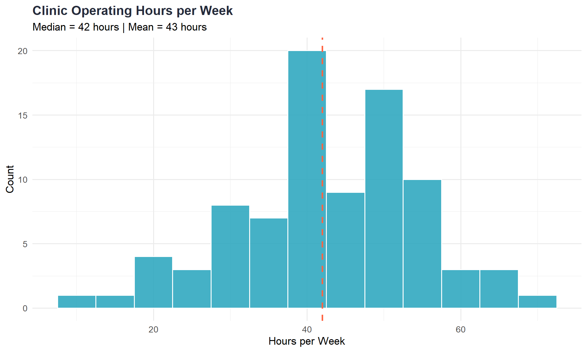
emr_summary <- dat %>%
count(EMRbinary) %>%
mutate(Percentage = round(100 * n / sum(n), 1))
ggplot(emr_summary, aes(x = EMRbinary, y = Percentage, fill = EMRbinary)) +
geom_col(show.legend = FALSE) +
geom_text(aes(label = paste0(n, " (", Percentage, "%)")), vjust = -0.5, size = 5) +
scale_y_continuous(limits = c(0, 100), breaks = seq(0, 100, 20)) +
scale_fill_manual(values = c("Yes" = aptc_teal, "No" = aptc_coral)) +
labs(title = "Electronic Medical Record (EMR) Usage", x = "Uses EMR?", y = "Percentage (%)") +
theme_minimal(base_size = 13) +
theme(plot.title = element_text(face = "bold", color = aptc_navy))
telehealth_summary <- dat %>%
count(Telehealth) %>%
mutate(Percentage = round(100 * n / sum(n), 1))
ggplot(telehealth_summary, aes(x = Telehealth, y = Percentage, fill = Telehealth)) +
geom_col(show.legend = FALSE) +
geom_text(aes(label = paste0(n, " (", Percentage, "%)")), vjust = -0.5, size = 5) +
scale_y_continuous(limits = c(0, 100), breaks = seq(0, 100, 20)) +
scale_fill_manual(values = aptc_palette) +
labs(title = "Telehealth Service Provision", x = "Offers Telehealth?", y = "Percentage (%)") +
theme_minimal(base_size = 13) +
theme(plot.title = element_text(face = "bold", color = aptc_navy))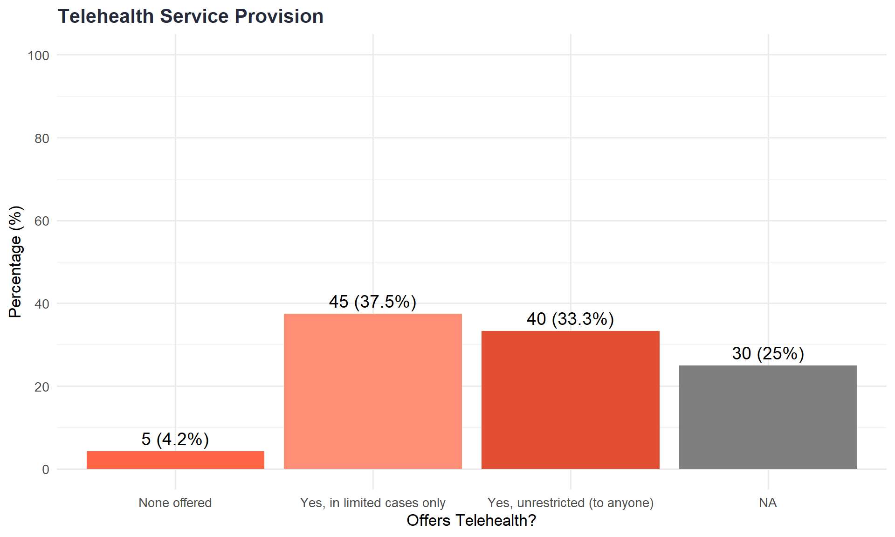
# Telehealth percentage usage by service type
telehealth_vars <- tibble(
Variable1 = c("PercTxTelehealth_1", "PercAxTelehealth_1", "PercClinSupTele_1"),
Variable2 = c("PercTxTelehealth_2", "PercAxTelehealth_2", "PercClinSupTele_2"),
Service = c("Therapy", "Assessment", "Supervision")
)
telehealth_usage <- dat %>%
select(PercTxTelehealth_1, PercAxTelehealth_1, PercClinSupTele_1) %>%
mutate(across(everything(), as.numeric)) %>%
pivot_longer(everything(), names_to = "Variable", values_to = "Percent_InPerson") %>%
filter(!is.na(Percent_InPerson)) %>%
mutate(
Service = case_when(
Variable == "PercTxTelehealth_1" ~ "Therapy",
Variable == "PercAxTelehealth_1" ~ "Assessment",
Variable == "PercClinSupTele_1" ~ "Supervision"
),
Percent_Telehealth = 100 - Percent_InPerson
) %>%
group_by(Service) %>%
summarise(
N = n(),
Mean_InPerson = mean(Percent_InPerson),
Mean_Telehealth = mean(Percent_Telehealth),
Median_InPerson = median(Percent_InPerson),
Median_Telehealth = median(Percent_Telehealth),
.groups = "drop"
)
telehealth_usage %>%
mutate(across(where(is.numeric) & !matches("N"), ~round(., 1))) %>%
kable(caption = "Telehealth vs In-Person Service Delivery (%)") %>%
kable_styling(bootstrap_options = c("striped", "hover"))| Service | N | Mean_InPerson | Mean_Telehealth | Median_InPerson | Median_Telehealth |
|---|---|---|---|---|---|
| Assessment | 83 | 91.75904 | 8.240964 | 99 | 1 |
| Supervision | 91 | 78.43956 | 21.560440 | 90 | 10 |
| Therapy | 84 | 75.39286 | 24.607143 | 80 | 20 |
# Visualization
telehealth_plot_data <- telehealth_usage %>%
select(Service, Mean_InPerson, Mean_Telehealth) %>%
pivot_longer(cols = c(Mean_InPerson, Mean_Telehealth),
names_to = "Modality", values_to = "Percentage") %>%
mutate(Modality = ifelse(Modality == "Mean_InPerson", "In-Person", "Telehealth"))
ggplot(telehealth_plot_data, aes(x = Service, y = Percentage, fill = Modality)) +
geom_col(position = "dodge", alpha = 0.9) +
geom_text(aes(label = paste0(round(Percentage), "%")),
position = position_dodge(width = 0.9), vjust = -0.5, size = 3.5) +
scale_fill_manual(values = c("In-Person" = aptc_teal, "Telehealth" = aptc_coral)) +
scale_y_continuous(limits = c(0, 100)) +
labs(
title = "Service Delivery by Modality",
subtitle = "Mean percentage of services delivered in-person vs telehealth",
x = NULL,
y = "Percentage (%)",
fill = "Modality"
) +
theme_minimal(base_size = 13) +
theme(
plot.title = element_text(face = "bold", color = aptc_navy),
legend.position = "top"
)
ai_clindir <- dat %>%
count(AIUseClinDir) %>%
mutate(Percentage = round(100 * n / sum(n), 1))
ai_students <- dat %>%
count(AIUseStudentsAllowed) %>%
mutate(Percentage = round(100 * n / sum(n), 1))
p1 <- ggplot(ai_clindir, aes(x = AIUseClinDir, y = Percentage, fill = AIUseClinDir)) +
geom_col(show.legend = FALSE) +
geom_text(aes(label = paste0(Percentage, "%")), vjust = -0.5, size = 4) +
scale_y_continuous(limits = c(0, 100), breaks = seq(0, 100, 20)) +
scale_fill_manual(values = aptc_palette) +
labs(title = "AI Use by Clinic Directors", x = NULL, y = "Percentage (%)") +
theme_minimal(base_size = 11) +
theme(plot.title = element_text(face = "bold", color = aptc_navy))
p2 <- ggplot(ai_students, aes(x = AIUseStudentsAllowed, y = Percentage, fill = AIUseStudentsAllowed)) +
geom_col(show.legend = FALSE) +
geom_text(aes(label = paste0(Percentage, "%")), vjust = -0.5, size = 4) +
scale_y_continuous(limits = c(0, 100), breaks = seq(0, 100, 20)) +
scale_fill_manual(values = aptc_palette) +
labs(title = "AI Use Allowed for Students", x = NULL, y = "Percentage (%)") +
theme_minimal(base_size = 11) +
theme(
plot.title = element_text(face = "bold", color = aptc_navy),
axis.text.x = element_text(angle = 20, hjust = 1)
)
p1 + p2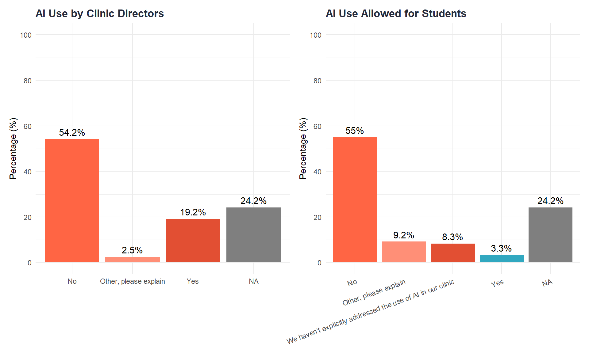
# AI Policy
ai_policy <- dat %>%
count(AIPolicy) %>%
mutate(Percentage = round(100 * n / sum(n), 1))
ai_policy %>%
kable(caption = "Does Your Clinic Have an AI Policy?") %>%
kable_styling(bootstrap_options = c("striped", "hover"))| AIPolicy | n | Percentage |
|---|---|---|
| No | 17 | 14.2 |
| Other, please explain | 4 | 3.3 |
| Yes | 70 | 58.3 |
| NA | 29 | 24.2 |
# ROM usage
rom_vars <- c(
"ROMsystem_1" = "OQ-45",
"ROMsystem_2" = "PHQ-9/GAD-7",
"ROMsystem_3" = "PCOMS/ORS",
"ROMsystem_4" = "Standardized Assessment Battery",
"ROMsystem_5" = "Custom/Clinic-developed",
"ROMsystem_6" = "Other"
)
rom_summary <- dat %>%
select(starts_with("ROMsystem_")) %>%
select(-contains("TEXT")) %>%
summarise(across(everything(), ~sum(!is.na(.) & . != "0" & . != "", na.rm = TRUE))) %>%
pivot_longer(everything(), names_to = "Variable", values_to = "Count") %>%
mutate(
System = rom_vars[Variable],
Percentage = round(100 * Count / nrow(dat), 1)
) %>%
filter(!is.na(System), Count > 0) %>%
arrange(desc(Count))
if(nrow(rom_summary) > 0) {
ggplot(rom_summary, aes(x = reorder(System, Count), y = Percentage, fill = System)) +
geom_col(show.legend = FALSE) +
geom_text(aes(label = paste0(Count, " (", Percentage, "%)")), hjust = -0.1, size = 3.5) +
coord_flip() +
scale_y_continuous(limits = c(0, max(rom_summary$Percentage) + 15)) +
scale_fill_manual(values = aptc_palette) +
labs(
title = "Routine Outcome Monitoring Systems Used",
subtitle = "Respondents could select multiple systems",
x = NULL,
y = "Percentage (%)"
) +
theme_minimal(base_size = 13) +
theme(
plot.title = element_text(face = "bold", color = aptc_navy),
panel.grid.minor = element_blank()
)
rom_summary %>%
select(System, Count, Percentage) %>%
kable(caption = "ROM Systems Used (Select All That Apply)") %>%
kable_styling(bootstrap_options = c("striped", "hover"))
}| System | Count | Percentage |
|---|---|---|
| Custom/Clinic-developed | 25 | 20.8 |
| Standardized Assessment Battery | 23 | 19.2 |
| PHQ-9/GAD-7 | 11 | 9.2 |
| Other | 11 | 9.2 |
| OQ-45 | 7 | 5.8 |
| PCOMS/ORS | 6 | 5.0 |
research_summary <- dat %>%
count(ResearchActive) %>%
mutate(Percentage = round(100 * n / sum(n), 1))
ggplot(research_summary, aes(x = ResearchActive, y = Percentage, fill = ResearchActive)) +
geom_col(show.legend = FALSE) +
geom_text(aes(label = paste0(n, " (", Percentage, "%)")), vjust = -0.5, size = 4) +
scale_y_continuous(limits = c(0, 100), breaks = seq(0, 100, 20)) +
scale_fill_manual(values = aptc_palette) +
labs(title = "Research Activity in Training Clinics", x = "Research Status", y = "Percentage (%)") +
theme_minimal(base_size = 13) +
theme(
plot.title = element_text(face = "bold", color = aptc_navy),
axis.text.x = element_text(angle = 15, hjust = 1)
)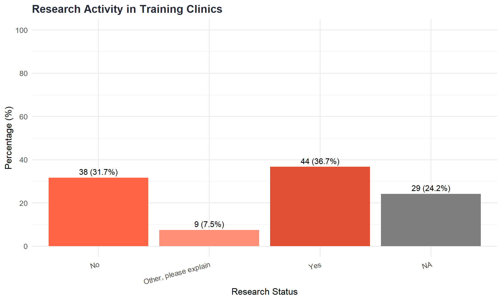
burnout_stats <- dat %>%
filter(!is.na(Burnout_1)) %>%
summarise(
N = n(),
Mean = mean(Burnout_1),
SD = sd(Burnout_1),
Median = median(Burnout_1),
Min = min(Burnout_1),
Max = max(Burnout_1)
)
dat %>%
filter(!is.na(Burnout_1)) %>%
ggplot(aes(x = Burnout_1)) +
geom_histogram(binwidth = 1, fill = aptc_coral, color = "white", alpha = 0.9) +
geom_vline(aes(xintercept = mean(Burnout_1)), color = aptc_navy, linetype = "dashed", size = 1) +
scale_x_continuous(breaks = 0:6) +
labs(
title = "Burnout Levels Among Clinic Directors",
subtitle = paste0("Mean = ", round(burnout_stats$Mean, 2), " (SD = ", round(burnout_stats$SD, 2), ") | Range: 0-6"),
x = "Burnout Score (0 = No burnout, 6 = Severe burnout)",
y = "Count"
) +
theme_minimal(base_size = 13) +
theme(
plot.title = element_text(face = "bold", color = aptc_navy)
)
The CBI assesses multiple dimensions of work-related burnout. Items are rated on a scale where higher scores indicate greater burnout.
# CBI Items
cbi_vars <- tibble(
Variable = c("Burnout_1", "Burnout_2", "Burnout_3", "Burnout_4", "Burnout_5"),
Item = c(
"How often do you feel tired?",
"How often are you physically exhausted?",
"Do you feel burned out because of your work?",
"Do you feel worn out at the end of the working day?",
"Do you find it hard to work with clients?"
)
)
# Calculate stats for each item
cbi_summary <- dat %>%
select(all_of(cbi_vars$Variable)) %>%
pivot_longer(everything(), names_to = "Variable", values_to = "Score") %>%
filter(!is.na(Score)) %>%
left_join(cbi_vars, by = "Variable") %>%
group_by(Item) %>%
summarise(
N = n(),
Mean = mean(Score),
SD = sd(Score),
Median = median(Score),
.groups = "drop"
) %>%
arrange(desc(Mean))
cbi_summary %>%
mutate(across(where(is.numeric) & !matches("N"), ~round(., 2))) %>%
kable(caption = "Copenhagen Burnout Inventory (CBI) Item Summary") %>%
kable_styling(bootstrap_options = c("striped", "hover"))| Item | N | Mean | SD | Median |
|---|---|---|---|---|
| How often do you feel tired? | 100 | 2.96 | 1.52 | 3 |
| How often are you physically exhausted? | 100 | 2.65 | 1.59 | 3 |
| Do you feel worn out at the end of the working day? | 100 | 2.27 | 1.57 | 2 |
| Do you feel burned out because of your work? | 100 | 1.94 | 1.58 | 2 |
| Do you find it hard to work with clients? | 100 | 1.40 | 1.46 | 1 |
# Calculate composite burnout score
dat <- dat %>%
rowwise() %>%
mutate(
Burnout_Composite = mean(c(Burnout_1, Burnout_2, Burnout_3, Burnout_4, Burnout_5), na.rm = TRUE)
) %>%
ungroup()
burnout_composite_stats <- dat %>%
filter(!is.na(Burnout_Composite)) %>%
summarise(
N = n(),
Mean = mean(Burnout_Composite),
SD = sd(Burnout_Composite),
Median = median(Burnout_Composite),
Min = min(Burnout_Composite),
Max = max(Burnout_Composite)
)
dat %>%
filter(!is.na(Burnout_Composite)) %>%
ggplot(aes(x = Burnout_Composite)) +
geom_histogram(binwidth = 0.5, fill = aptc_coral, color = "white", alpha = 0.9) +
geom_vline(aes(xintercept = mean(Burnout_Composite)), color = aptc_navy, linetype = "dashed", size = 1) +
scale_x_continuous(breaks = 0:6) +
labs(
title = "CBI Composite Burnout Score Distribution",
subtitle = paste0("Mean = ", round(burnout_composite_stats$Mean, 2),
" (SD = ", round(burnout_composite_stats$SD, 2), ")"),
x = "Composite Burnout Score (0-6)",
y = "Count"
) +
theme_minimal(base_size = 13) +
theme(
plot.title = element_text(face = "bold", color = aptc_navy)
)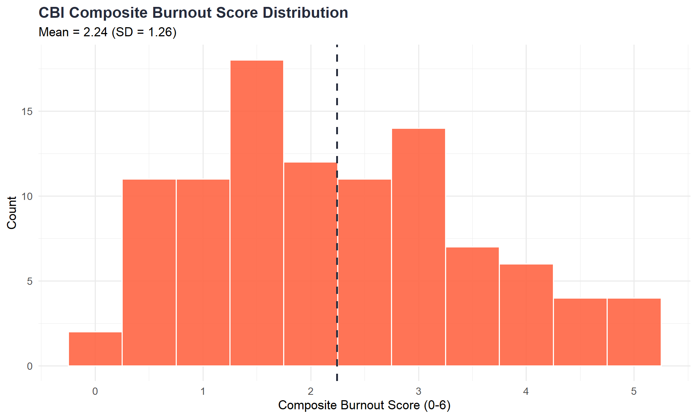
# CBI items visualization
cbi_plot_data <- dat %>%
select(all_of(cbi_vars$Variable)) %>%
pivot_longer(everything(), names_to = "Variable", values_to = "Score") %>%
filter(!is.na(Score)) %>%
left_join(cbi_vars, by = "Variable") %>%
mutate(Item = str_wrap(Item, width = 30))
ggplot(cbi_plot_data, aes(x = reorder(Item, Score, FUN = mean), y = Score, fill = Item)) +
geom_boxplot(alpha = 0.8, show.legend = FALSE) +
coord_flip() +
scale_fill_manual(values = aptc_palette) +
labs(
title = "Burnout by CBI Item",
subtitle = "Higher scores indicate greater burnout (0-6 scale)",
x = NULL,
y = "Burnout Score"
) +
theme_minimal(base_size = 12) +
theme(
plot.title = element_text(face = "bold", color = aptc_navy)
)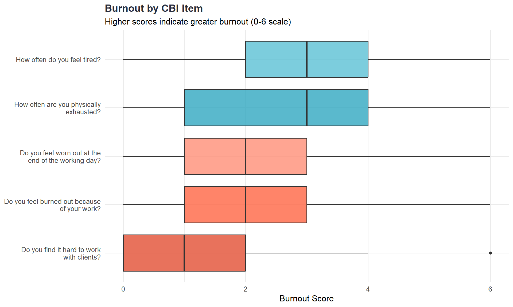
# Burnout by tenure track status
burnout_by_tt <- dat %>%
filter(!is.na(Burnout_Composite), !is.na(PositionType)) %>%
mutate(
TenureStatus = case_when(
is_tt(PositionType) ~ "TT/Tenured",
is_ntt(PositionType) ~ "Non-Tenure-Track",
TRUE ~ "Other"
)
) %>%
group_by(TenureStatus) %>%
summarise(
N = n(),
Mean = mean(Burnout_Composite),
SD = sd(Burnout_Composite),
Median = median(Burnout_Composite),
.groups = "drop"
)
burnout_by_tt %>%
mutate(across(where(is.numeric) & !matches("N"), ~round(., 2))) %>%
kable(caption = "Composite Burnout by Tenure Track Status") %>%
kable_styling(bootstrap_options = c("striped", "hover"))| TenureStatus | N | Mean | SD | Median |
|---|---|---|---|---|
| Non-Tenure-Track | 73 | 2.208219 | 1.26 | 2.0 |
| Other | 17 | 2.494118 | 1.35 | 2.6 |
| TT/Tenured | 10 | 2.080000 | 1.07 | 1.8 |
# Burnout by rank
burnout_by_rank <- dat_simple %>%
filter(!is.na(Burnout_1), !is.na(RankGrp)) %>%
group_by(RankGrp) %>%
summarise(
N = n(),
Mean = mean(Burnout_1, na.rm = TRUE),
SD = sd(Burnout_1, na.rm = TRUE),
.groups = "drop"
) %>%
filter(N >= 3)
if(nrow(burnout_by_rank) > 0) {
ggplot(burnout_by_rank, aes(x = reorder(RankGrp, Mean), y = Mean, fill = RankGrp)) +
geom_col(show.legend = FALSE) +
geom_errorbar(aes(ymin = pmax(0, Mean - SD), ymax = Mean + SD), width = 0.2, color = aptc_navy) +
geom_text(aes(label = paste0("n=", N)), vjust = -0.5, size = 3) +
coord_flip() +
scale_fill_manual(values = aptc_palette) +
labs(
title = "Burnout by Academic Rank",
subtitle = "Error bars = ±1 SD",
x = NULL,
y = "Mean Burnout Score (0-6)"
) +
theme_minimal(base_size = 13) +
theme(
plot.title = element_text(face = "bold", color = aptc_navy)
)
}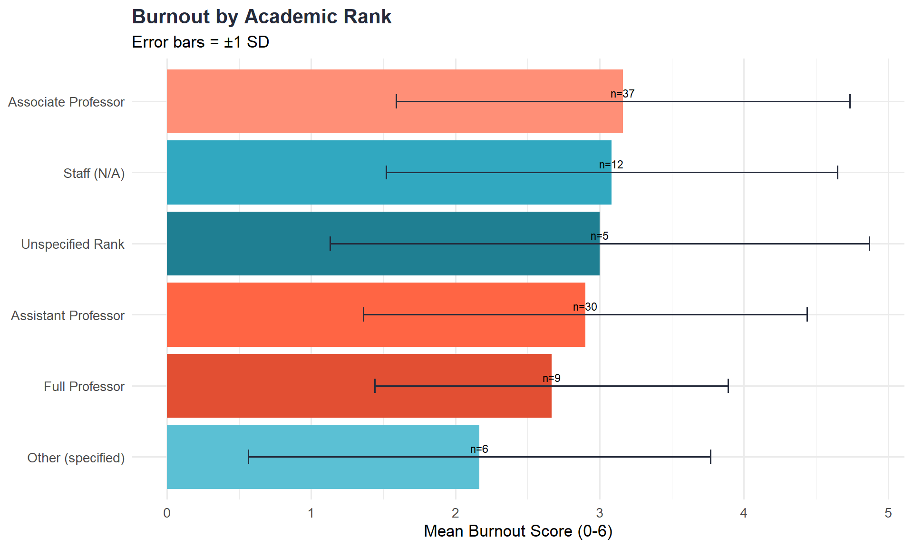
sessionInfo()R version 4.5.1 (2025-06-13 ucrt)
Platform: x86_64-w64-mingw32/x64
Running under: Windows 11 x64 (build 26200)
Matrix products: default
LAPACK version 3.12.1
locale:
[1] LC_COLLATE=English_United States.utf8
[2] LC_CTYPE=English_United States.utf8
[3] LC_MONETARY=English_United States.utf8
[4] LC_NUMERIC=C
[5] LC_TIME=English_United States.utf8
time zone: America/Chicago
tzcode source: internal
attached base packages:
[1] stats graphics grDevices utils datasets methods base
other attached packages:
[1] viridis_0.6.5 viridisLite_0.4.2 patchwork_1.3.2 kableExtra_1.4.0
[5] knitr_1.51 gt_1.3.0 scales_1.4.0 skimr_2.2.1
[9] freqtables_0.1.1 lubridate_1.9.4 forcats_1.0.0 stringr_1.5.1
[13] dplyr_1.1.4 purrr_1.1.0 readr_2.1.5 tidyr_1.3.2
[17] tibble_3.3.0 ggplot2_4.0.1 tidyverse_2.0.0 readxl_1.4.5
loaded via a namespace (and not attached):
[1] gtable_0.3.6 xfun_0.52 htmlwidgets_1.6.4 lattice_0.22-7
[5] tzdb_0.5.0 vctrs_0.7.1 tools_4.5.1 generics_0.1.4
[9] pkgconfig_2.0.3 Matrix_1.7-3 RColorBrewer_1.1-3 S7_0.2.0
[13] lifecycle_1.0.4 compiler_4.5.1 farver_2.1.2 textshaping_1.0.1
[17] repr_1.1.7 litedown_0.7 htmltools_0.5.8.1 sass_0.4.10
[21] yaml_2.3.10 pillar_1.11.0 nlme_3.1-168 commonmark_2.0.0
[25] tidyselect_1.2.1 digest_0.6.37 stringi_1.8.7 labeling_0.4.3
[29] splines_4.5.1 fastmap_1.2.0 grid_4.5.1 cli_3.6.5
[33] magrittr_2.0.3 base64enc_0.1-3 utf8_1.2.6 withr_3.0.2
[37] timechange_0.3.0 rmarkdown_2.29 gridExtra_2.3 cellranger_1.1.0
[41] hms_1.1.3 evaluate_1.0.4 markdown_2.0 mgcv_1.9-3
[45] rlang_1.1.7 glue_1.8.0 xml2_1.3.8 svglite_2.2.1
[49] rstudioapi_0.17.1 jsonlite_2.0.0 R6_2.6.1 systemfonts_1.3.1
[53] fs_1.6.6
10 Social Justice & DEI Efforts
Code
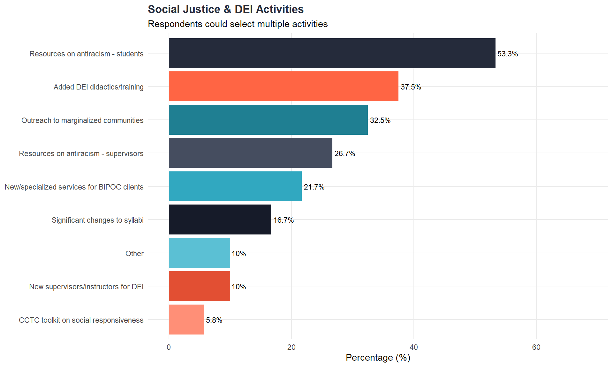
Code